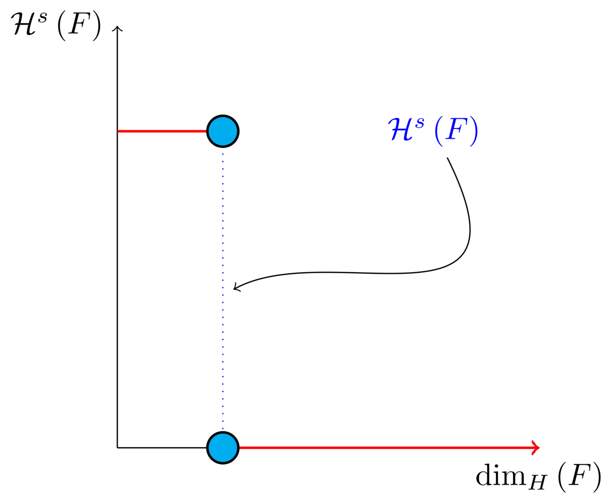
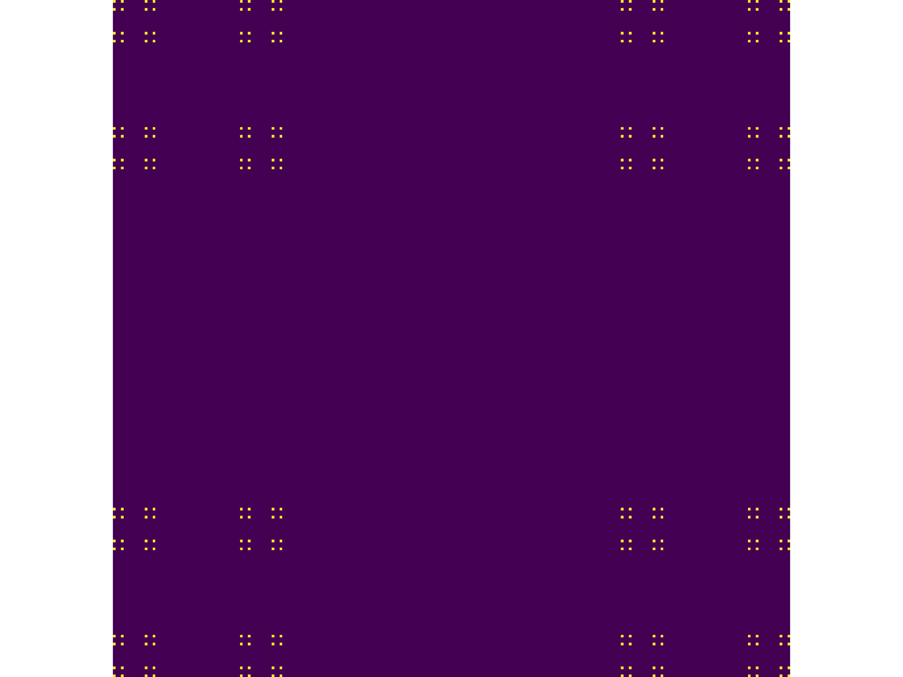
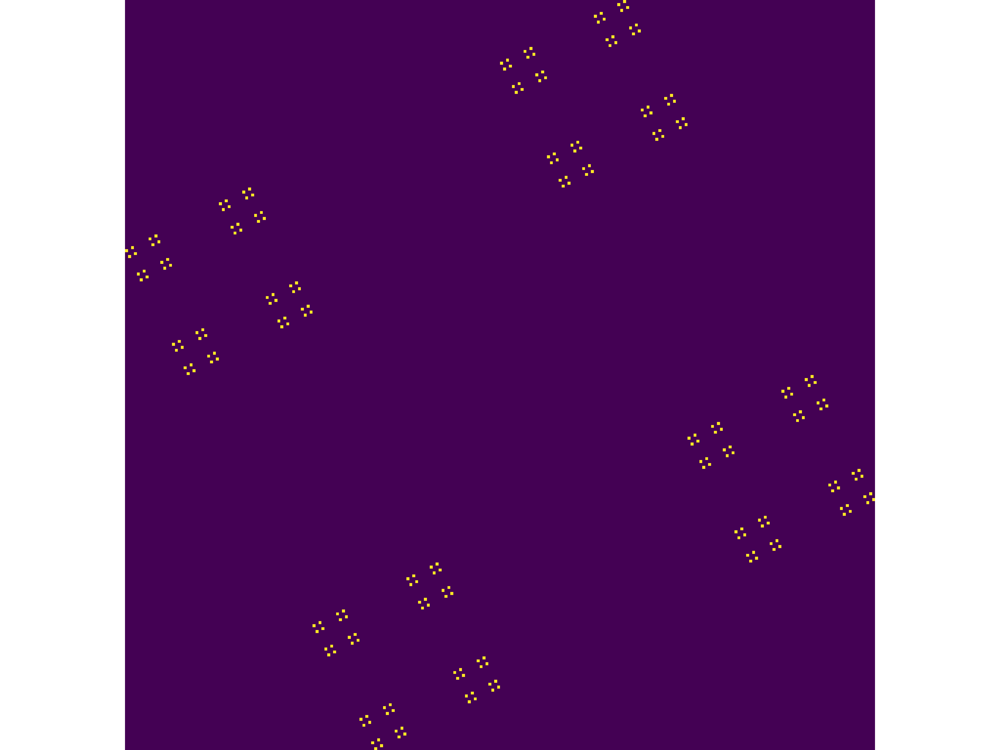
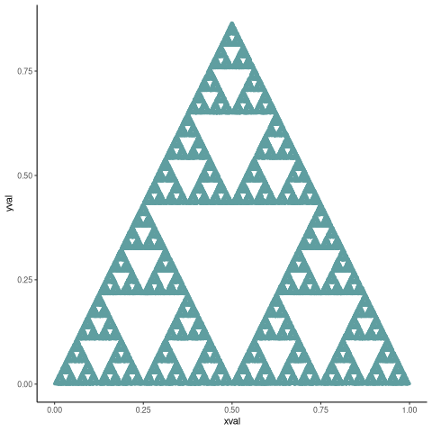
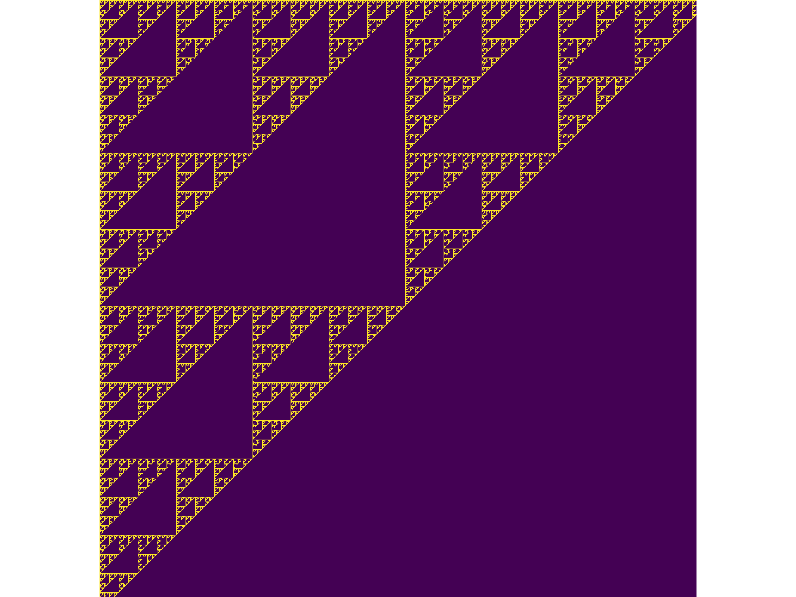
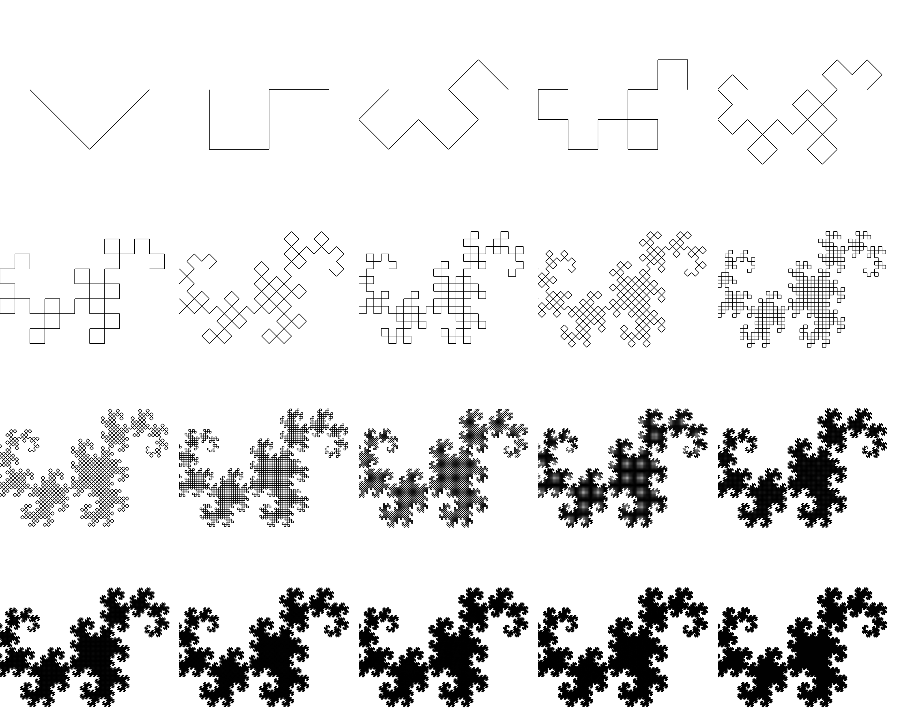
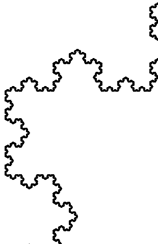
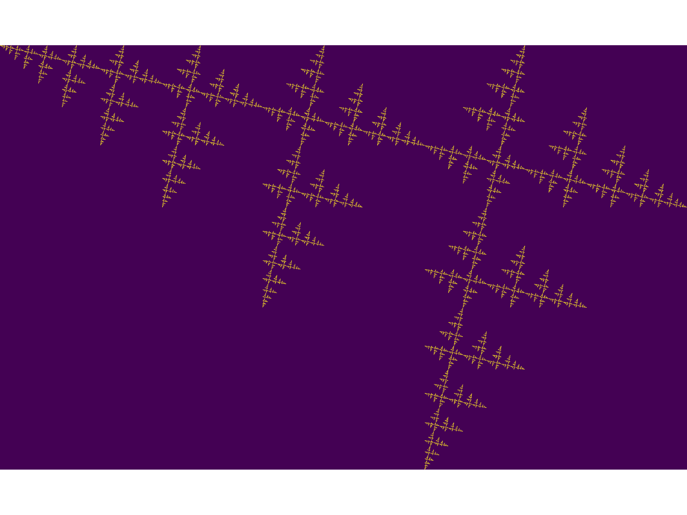
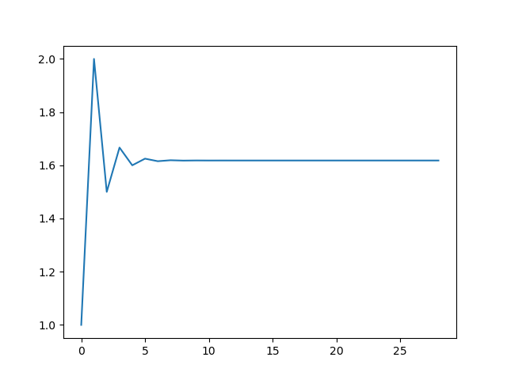
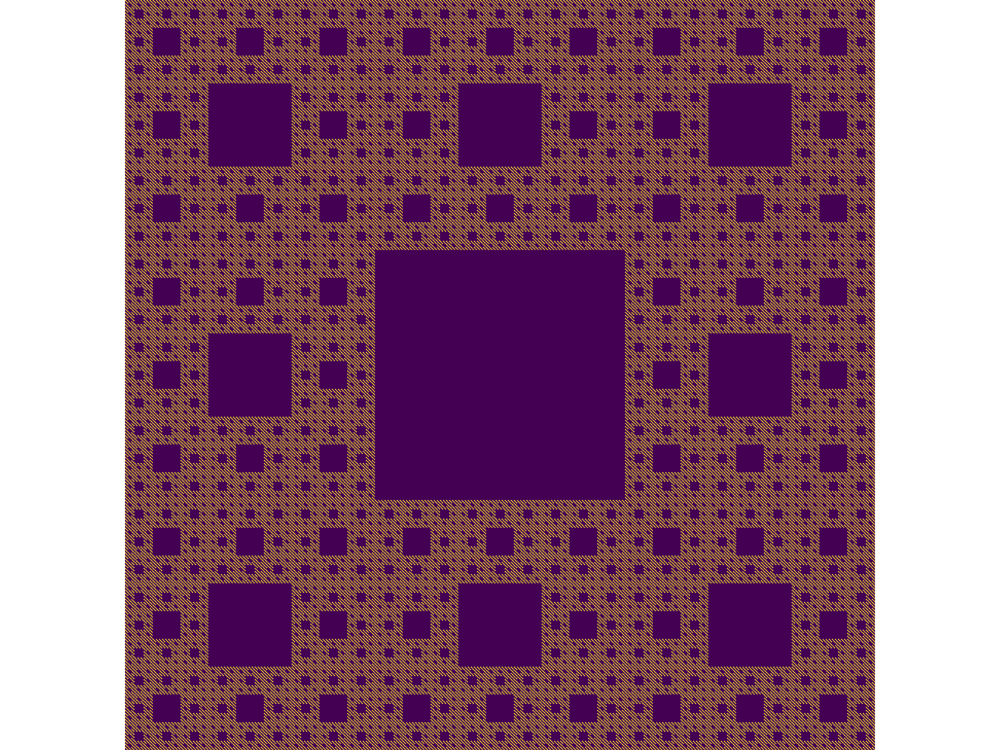

The Emergence of Patterns in Nature and Chaos Theory
Table of Contents
- 1. Report
- 1.1. Hausdorff Dimension Ryan
- 1.2. Box Counting
- 1.3. Fractals Generally
- 1.4. Generating Self Similar Fractals
- 1.5. Fractal Dimensions Ryan
- 1.5.1. Turtle
- 1.5.2. Calculating the Dimension of Julia Set
- 1.5.3. My Fractal
- 1.6. Julia Sets and Mandelbrot Sets
- 1.7. Turing
- 1.8. Appendix
- 2. Outline
- 2.1. Introduction Ryan
- 2.2. Programming Recursion Ryan
- 2.3. Fibonacci Sequence Ryan James
- 2.3.1. Introduction Ryan
- 2.3.2. Computational Approach Ryan
- 2.3.3. Exponential Generating Functions
- 2.3.4. Fibonacci Sequence and the Golden Ratio Ryan
- 2.4. Persian Recursion Ryan
- 2.5. Julia Sets Ryan
- 2.6. MandelBrot Ryan
- 2.7. Relevant Sources
- 2.8. Appendix
1 Report
1.1 Hausdorff Dimension Ryan
1.1.1 Topological Equivalence
Sources for this section on topology are primarily.
Topology is an area of mathematics concerned with ideas of continuity through the study of figures that are preserved under homeomorphic transformations. cite:gilmoreTopologyChaosAlice200
Two figures are said to be homeomorphic if there is a continuous bijective mapping between the two shapes .
So for example deforming a cube into a sphere would be homeomorphic, but deforming a sphere into a torus would not, because the the surface of the shape would have to be compromised to acheive that.
Historically the concept of dimension was a difficult problem with a tenuous definition, while an inutitive definition related the dimension of a shape to the number of parameters needed to describe that shape, this definition is not sufficient to be preserved under a homeomorphic transform however.
Consider the koch fractal in figure 1 (see also figure 2), at each iteration the perimeter is given by \(p_{n}=p_{n-1} \left(\frac{4}{3} \right)\), this means if the shape is scaled by some factor \(s\) the the following relationship holds.
The number of edges in the koch fractal is given by:
\begin{align} N_{n} &= N_{n-1} \cdot 4 \\ &= 3 \cdot 4^{n} \end{align}If the length of any individual side was given by \(l\) and scaled by some value \(s\) then the length of each individual edge would be given by:
\begin{align} l = \frac{s \cdot l_{0}}{3^{n}} \end{align}The total perimeter would be given by:
\begin{align} p_{n} &= N_{n} \times l \\ &= 3\cdot 4^{n} \times \frac{s \cdot l_{o}}{3^{n}} \\ &= 3 \cdot s \cdot l_{0} \left( \frac{4}{3} \right)^{n} \end{align}The koch snowflake, is defined such that there are no edges, every point on the curve is the vertex of an equilateral triangle. Every time the koch curve is iterated, one edge is reduced in length by a scale of 3 and the overall length increases by a factor of 4, this means if the overall shape was scaled by a factor of \(s\) the number of segments.
Briggs and Tyree provide a great introduction.
the scale of resolution increases 3 fold THIS IS NOT CORRECT, I MUST SHOW THAT THE DIMENSION IS \(\frac{ln(4)}{\ln(3)}\) BUT I’M SIMPLY OUT OF TIME.
\begin{align} s \cdot p_{n} &= (4/3)^{n} \cdot s \cdot P_{0}\\ & \propto \left(\frac{4}{3}\right)^{n} \\ \implies n &= \frac{\ln\left( 4 \right)}{\ln\left( 3 \right)} \label{eq:koch-dim} \end{align}In ordinary geometric shapes this value \(n\) will be the dimension of the shape,
See for working.
The idea is we start with the similarity dimension which should be equal to the hausdorff and box counting for most fractals, but for fractals that aren’t so obviously self similar it won’t be feasible but for the julia set we’ll need to expand the concept to box counting, we don’t know whether or not the dimension of the julia set is constant across scales so we use linear regression to check, this is more important for things like coastlines.
with respect to that shapes measure. For example consider measure similar to mass, a piece of wire when scaled in length, will increase in mass by a factor of that scale, whereas a sheet of material would increase in mass by a factor proportional to the square of that scaling.
In the case of the koch snowflake, the measure of the shape, when scaled, will increase by a factor of
Figure 1: Progression of the Koch Snowflake
}
Figure 2: Progression of the Koch Snowflake
In the development of topology
1.1.2 Hausdorff Dimension
Sources for this section on Hausdorff Dimension are primarily
1.1.2.1 Measure
Let \(F\) be some arbitrary subset of euclidean space \(\mathbb{R}^n\), 1
Consider a collection of sets,\(\{U_i: i \in \mathbb{Z}^{+}, U\subset \mathbb{R}^{n}\}\), each of which having a diameter less than \(\delta\).
The motivating idea is that if the elements of \(U\) can be laid ontop of \(F\) then \(U\) is said to be a \(\delta\) -cover of \(F\), more rigorously this could be defined:
\begin{align} F \subset \bigcup^\infty_{i=1} \left[ U_i \right] \quad : 0 \leq \left\lvert U_i \right\rvert \leq \delta \label{eq:hausdorff-covering} \end{align}An example of this covering is provided in figure 3, in that example the figure on the right is covered by squares, which each could be an element of \(\{U_{i}\}\), it is important to note however that the shapes needn’t be squares, they could be any arbitrary figure.
So for example:
- \(F\) could be some arbitrary 2D shape, and \(U_{i}\) could be a collection of identical squares, OR
- \(F\) could be the outline of a coastline and \(U_{i}\) could be a set of circles, OR
- \(F\) could be the surface of a sheet and \(U_{i}\) could be a set of spherical balls
- The use of balls is a simpler but equivalent approach to the theory because any set of diamater \(r\) can be enclosed in a ball of radius \(\frac{r}{2}\)
- \(F\) could be a more abstracted figure like figures 3 or 4 and \(\{U_{i}\}\) a collection of various different lines, shapes or 3d objects.
The Hausdorff measure is concenred with only the diamater of each element of \(\{U_{i}\}\) and considers \(\sum^{\infty}_{i=1} \left[\left\lvert U_{i}\right\rvert^{s}\right]\) where the covering of \(U_{i}\) minimizes the summation.
\begin{align} \mathcal{H}^s_{\delta}\left( F \right)= \inf \left\{ \sum^{\infty}_{i= 1} \left\lvert U_i \right\rvert^s \enspace : \enspace \left\{U_i\right\} \text{ is a } \delta \text{-cover of } F \right\}, \quad \delta, s > 0 \label{eq:delta-measure} \end{align}in 2 dimensions, this is equivalent to considering the number of boxes, of diamater \(\leq \delta\) that will cover over a shape as shown in figure 3, the delta Haussendorf measure \(\mathcal{H}^{s}_{\delta} \left(F\right)\) will be the area of the boxes when arranged in such a way that minimises the area.
As \(\delta\) is made arbitrarily small \(\matcal{H}_{\delta}^{s}\) will approach some limit, in the case of figures 3 and 4 the value of \(\mathcal{H}^{2}_{\delta}\) will approach the area of the shape as \(\delta \rightarrow 0\) and so the \(s^{th}\) dimensional Hausendorff measure is given by:
\begin{align} \mathcal{H}^{s} = \lim_{\delta \rightarrow 0}\left( \mathcal{H}^{s}_{\delta} \right) \end{align}This is defined for all subsets of \(\mathbb{R}^n\) for example the value of \(\mathcal{H}^{2}\) corresponding to figure 4 will be limit that boxes would approach when covering that area, which would be the area of the shape (\(4\times 1^2 + 4\times \pi\times \frac{1}{2^2} + \frac{1}{2}\times 1 \times \sin{\frac{\pi}{3}}\)).
Figure 3: The shape on the left corresponds to \(F \subset \mathbb{R^{2}}\), each identical square box on the right represents a set \(U_{i}\).
Figure 4: A disconnected subset of \(\mathbb{R}^{2}\), the squares have a diameter of \(\sqrt{2}\), the circles 1 and the equilateral triangles 1.
1.1.2.1.1 Lower Dimension Hausdorff Measurements
Consider again the example of a 2D shape, the value of \(\mathcal{H}^{1}\) would still be defined by eqref:eq:delta-measure, but unlike \(\mathcal{H}^{2}\) in section 1.1.2.1 the value of \(\left\lvert U_i \right\rvert^1\) would be considered as opposed to \(\left\lvert U_i \right\rvert^2\).
As \(\delta\) is made arbitrarily small the boxes that cover the shape are made also to be arbitrarily small. Although the area of the boxes must clearly be bounded by the shape of \(F\), if one imagines an infinite number of infinitely dense lines packing into a 2D shape with an infinite density it can be seen that the total length of those lines will be infinite.
To build on that same analogy, another way to imagine this is to pack a 2D shape with straight lines, the total length of all lines will approach the same value as the length of the lines of the squares as they are packed infinitely densely. Because lines cannot fill a 2D shape, as the density of the lines increases, the overall length will be zero.
This is consistent with shapes of other shapes as well, consider the koch snowflake introduced in section 1.1.1 and shown in figure 1, the dimension of this shape is greater than 1, and the number of lines necessary to describe that shape is also infinite.
If the dimension of \(F\) is less than \(s\), the Hausdorff Measure will be given by: 2
\begin{align} \mathrm{dim}\left( F \right ) < s \implies \mathcal{H}^{s} \left( F \right) = \infty \end{align}1.1.2.1.2 Higher Dimension Hausdorff Dimension
For small values of \(s\) (i.e. less than the dimension of \(F\)), the value of \(\mathcal{H}^s\) will be \(\infty\).
Consider some value \(s\) such that the Hausdorff measure is not infinite, i.e. values of \(s\): 3
\[ \mathcal{H}^s = L \in \mathbb{R} \]
Consider a dimensional value \(t\) that is larger than \(s\) and observe that:
\begin{align*} 0and so we have the following relationship:
\begin{align} \mathcal{H}^{s} \left(F\right) \in \mathbb{R} \implies \mathcal{H}^t\left( F \right)= 0 \quad \forall t > s \label{eq:hdfzero} \end{align}Hence the value of the s-dimensional Hausdorff Measure, \(s\) is only a finite, non-zero value, when \(s = \mathrm{dim}_{H}\left( F \right)\) this is visualised in figure .

Figure 5: The value of the s-dimensional Hausdorff Measure of some subset of Euclidean space \(F\in \mathbb{R}^{n}\) is 0 or \(\infty\) when the dimension of \(F\) is not equal to \(s\).
1.1.2.2 Hausdorff Dimension
The value \(s\) at which \(\mathcal{H}^{s}\) changes from \(\infty\) to 0, shown in figure 5 and eqref:eq:hdfzero is the definition of the Hausdorff Measure, it is a generalisation of the idea of dimension that is typically understood with respect to ordinary shapes and 3D figures.
1.1.2.3 Research
I feel very inclided to read these notes 4
1.2 Box Counting
Sources for this section are primarily:
- Falconer
- Strogatz Non Linear Dynamics
- There are many different notions of dimension, atleast 10
- Hausdorff Dimension is the oldest and most important with respect to the dimensions of fractals
- The Box dimension has only boxes of fixed sizes, unlike the Hausdorff Dimensions where in the boxes may be arbitrary sizes less than \(\delta\) but it is significantly hader to calculate numerically
- The problem with the Hausdorff Dimension, discussed in \textsection 1.1, is that it is quite involved to solve, many shapes such as the koch snowflake haven’t even h
- Upper and lower bounds for the Hausdorff Measurement/ haven’t even been solved for many fractals, including the Koch Snowflake (shown in figure 2 ). cite:zhuLowerBoundHausdorffMeasure2003
The box counting method is widely used because it is relatively easy to calculate and in many cases is equal to the Hausdorff Dimension (see generally cite:ListFractalsHausdorff2020).
- TODO:
- While quite simply this is the number of boxes that scale, we need to more rigorously define it, much like Ch. 3.1 of Falconer cite:falconerFractalGeometryMathematical2003
- We also need to contrast this with the similarity dimension discussed in p. 413 of Strogatz cite:strogatzNonlinearDynamicsChaos2015
- A contrast should be drawn between this and Hausdorff, the most obvious difference being that the boxes are of a fixed size, unlike Hausdorff see p. 418 of Strogatz cite:strogatzNonlinearDynamicsChaos2015
1.3 Fractals Generally
- Many Fractals have a non finite dimension
- An exception to this is the Mandelbrot set or dragon curve which are two dimensional
1.4 Generating Self Similar Fractals
1.4.0.1 Examples
1.4.0.1.1 Vicsek Fractal
because this is self similar we can use it to test our box counting method 5 The Vicsek Fractal involves a pattern of iterating boxes:
#------------------------------------------------------------ #--- Function ----------------------------------------------- #------------------------------------------------------------ # n_i+1 = 3n_i ==> n = 3^n function selfRep(ICMat, width) B = ICMat h = size(B)[1] w = size(B)[2] Z = zeros(Int, h, w) B = [B Z B ; Z B Z ; B Z B] if (3*w)<width B = selfRep(B, width) end return B end #------------------------------------------------------------ #-- Plot ---------------------------------------------------- #------------------------------------------------------------ (mat = selfRep(fill(1, 1, 1), 27)) |> size GR.imshow(mat) #------------------------------------------------------------ #-- Similarity Dimension ------------------------------------ #------------------------------------------------------------ # Each time it iterates there are 5 more # but the overall dimensions of the square increases by a factor of 3 # so 3^D=5 ==> log_3(5) = log(5)/log(3) = D mat2 = selfRep(fill(1, 1, 1), 1000) l2 = sum(mat2) size2 = size(mat2)[1] mat1 = selfRep(fill(1, 1, 1), 500) l1 = sum(mat1) size1 = size(mat1)[1] log(l2/l1)/log(size2/size1) # https://en.wikipedia.org/wiki/Vicsek_fractal#Construction log(5)/log(3) ## julia> log(l2/l1)/log(size2/size1) ## 1.4649735207179269

Figure 6: TODO
1.4.0.1.2 Sierpinskis Carpet
Explained more in the book 6

1.4.0.1.3 Triangle
Producing the triangle was more difficult
This would be more accurate than pascals because there would be know bias and the model would be more accurate :
if (require("pacman")) { library(pacman) }else{ install.packages("pacman") library(pacman) } pacman::p_load(tidyverse) n <- 50000 df <- data.frame("xval"=1:n, "yval"=1:n) x <- c(runif(1), runif(1)) A <- c(0, 0) B <- c(1, 0) C <- c(0.5, sin(pi/3)) points <- list() points <- list(points, x) for (i in 1:n) { dice = sample(1:3, 1) if (dice == 1) { x <- (x + A)/2 df[i,] <- x } else if (dice == 2) { x <- (x + B)/2 df[i,] <- x } else { x <- (x + C)/2 df[i,] <- x } } # df ggplot(df, aes(x = xval, y = yval)) + geom_point(size = 1, col = "cadet blue") + theme_classic()

function pascal(n) mat = [isodd(binomial(BigInt(j+i),BigInt(i))) for i in 0:n, j in 0:n] return mat end GR.imshow(pascal(999)) GR.savefig("../../Report/media/pascal-sierpinsky-triangle.png") #------------------------------------------------------------ #-- Calculate Dimension ------------------------------------- #------------------------------------------------------------ mat2 = pascal(3000) l2 = sum(mat2) size2 = size(mat2)[1] mat1 = pascal(2000) l1 = sum(mat1) size1 = size(mat1)[1] log(l2/l1)/log(size2/size1) # https://en.wikipedia.org/wiki/Sierpi%C5%84ski_triangle log(3)/log(2)

Figure 9: TODO
There is lots of math in this section, we need to show:
[ ]why we get this pattern from pascals triangle.[ ]Is there any relationship to combinatorics?
This value is not correct 7, Investigate ../Problems/fractal-dimensions/Sierpinsky-triangle-pascal.jl
julia> log(l2/l1)/log(size2/size1)
2.082583161459976
julia> # https://en.wikipedia.org/wiki/Sierpi%C5%84ski_triangle
log(3)/log(2)
1.5849625007211563
1.5 Fractal Dimensions Ryan
See generally Three ways to generate
- Chaos Game
- Iteration Like Matrices and Turtles
- Testing if each region Belongs
- Like Julia Set
1.5.1 Turtle
Matrices can’t explain all patterns, Turtles are useful
using Shapefile using Luxor using Pkg #------------------------------------------------------------ #-- Dragon Curve ------------------------------------- #------------------------------------------------------------ function snowflake(length, level, 🐢, s) scale(s) if level == 0 Forward(🐢, 100) Turn(🐢, -90) Rotate(90) # Rectangle(🐢, length, length) return end length = length/9 snowflake(length, level-1, 🐢) Turn(🐢, -60) snowflake(length, level-1, 🐢) Turn(🐢, 2*60) snowflake(length, level-1, 🐢) Turn(🐢, -180/3) snowflake(length, level-1, 🐢) end @png begin 🐢 = Turtle() Pencolor(🐢, 1.0, 0.4, 0.2) Penup(🐢) Turn(🐢,180) Forward(🐢, 200) Turn(🐢,180) Pendown(🐢) levels = 10 snowflake(9^(levels), levels, 🐢, 1) end 800 800 "./snowFlat600.png" #------------------------------------------------------------ #-- Flat Snowflake ---------------------------------- #------------------------------------------------------------ function snowflake(length, level, 🐢, s) scale(s) if level == 0 Forward(🐢, length) # Rectangle(🐢, length, length) return end length = length/9 snowflake(length, level-1, 🐢) Turn(🐢, -60) snowflake(length, level-1, 🐢) Turn(🐢, 2*60) snowflake(length, level-1, 🐢) Turn(🐢, -180/3) snowflake(length, level-1, 🐢) end @png begin 🐢 = Turtle() Pencolor(🐢, 1.0, 0.4, 0.2) Penup(🐢) Turn(🐢,180) Forward(🐢, 200) Turn(🐢,180) Pendown(🐢) levels = 10 snowflake(9^(levels), levels, 🐢, 1) end 800 800 "/tmp/snowFlat600.png" #------------------------------------------------------------ #--- Round Snowflake Working --------------------------------- #------------------------------------------------------------ function snowflake(length, level, 🐢) if level == 0 # Forward(🐢, length) Circle(🐢, 1) return end length = length/9 snowflake(length, level-1, 🐢) Turn(🐢, -60) snowflake(length, level-1, 🐢) Turn(🐢, 2*60) snowflake(length, level-1, 🐢) Turn(🐢, -60) snowflake(length, level-1, 🐢) end 🐢 = Turtle() @svg begin for i in 1:3 levels = 9 snowflake(8^(levels-1), levels, 🐢) Turn(🐢, 120) end end 2000 2000 "/tmp/snowCurve.svg" 0 "/tmp/snowCurve.png" # The starting length must be such that the final length = 1 pixel # this depends on the levels # The levels must hence be fit to the resolution such that # the only variable is the resolution. # There is only two variables levels and resolution # length depends on the levels and for a perfect snowflake # the levels depends on the resolution. using Images, TestImages, Colors, ImageMagick # Load Image Back in img = load("/tmp/snowCurve.png") # Convert to Grayscale so only 2D imgg = Gray.(img) # convert to Matrix mat = convert(Array{Float64}, imgg) # 1 is white # so make all 1s 0 and everything else 1 for i in 1:size(mat)[1] for j in 1:size(mat)[2] if mat[i, j]==1 mat[i,j]=0 else mat[i,j]=1 end end end sum(mat) using GR GR.imshow(mat) mat mat2 = selfRep(fill(1, 1, 1), 1000) l2 = sum(mat2) size2 = size(mat2)[1] mat1 = selfRep(fill(1, 1, 1), 500) l1 = sum(mat1) size1 = size(mat1)[1] log(l2/l1)/log(size2/size1) # https://en.wikipedia.org/wiki/Vicsek_fractal#Construction log(5)/log(3) #------------------------------------------------------------ #--- Dragon ------------------------------------------------- #------------------------------------------------------------ function dragon(🐢, order, length) print(" ") # Don't remove this or code breaks, I don't know why? Turn(🐢, order*45) dragon_iterate(🐢, order, length, 1) end function dragon_iterate(🐢, order, length, sign) if order==0 Forward(🐢, length) else rootHalf = sqrt(0.5) dragon_iterate(🐢, order -1, length*rootHalf, 1) Turn(🐢, sign * -90) dragon_iterate(🐢, order -1, length*rootHalf, -1) end end ;mkdir /tmp/dragon @png begin 🐢 = Turtle() Turn(🐢, 180) Penup(🐢) Forward(🐢, 200) Pendown(🐢) Turn(🐢, 180) dragon(🐢, 15, 400) end 1000 1000 using Images, TestImages, Colors, ImageMagick # Load Image Back in img = load("/tmp/dragon.png") # Convert to Grayscale so only 2D imgg = Gray.(img) # convert to Matrix mat = convert(Array{Float64}, imgg) # 1 is white # so make all 1s 0 and everything else 1 for i in 1:size(mat)[1] for j in 1:size(mat)[2] if mat[i, j]==1 mat[i,j]=0 else mat[i,j]=1 end end end
1.5.1.1 Dragon Curve

Figure 10: TODO
1.5.1.2 Koch Snowflake

Figure 11: TODO
1.5.2 Calculating the Dimension of Julia Set
It converges too slowly The Julia set (discussed in section 1.6) can be solved by …
explain the code a little bit here
as shown in listing
A value on the complex plane can be associated with the julia set by iterating that value against a function of the form \(z \rightarrow z^{2} + \alpha + i \beta\) and measureing whether or not that value diverges or converges. This process is demonstrated in listing .
By associating each value on the complex plane with an element of a matrix an image of this pattern may be produced, see for example figure RABBIT
#!/bin/julia function juliaSet(z, num, my_func, boolQ=true) count = 1 # Iterate num times while count ≤ num # check for divergence if real(z)^2+imag(z)^2 > 2^2 if(boolQ) return 0 else return Int(count) end end #iterate z z = my_func(z) # + z count=count+1 end #if z hasn't diverged by the end if(boolQ) return 1 else return Int(count) end end
So I run the code shown in listing 1 which calls a file ./Julia-Set-Dimensions-functions.jl which is shown in listing 1 which returs the values shown in table 1.
@time include("./Julia-Set-Dimensions-functions.jl") ############################################################ #### Investigate Plot ####################################### ############################################################ f(z) = z^2 -1 test_mat = make_picture(800,800, z -> z^2 + 0.37-0.2*im) test_mat = make_picture(800,800, z -> z^2 + -0.123+0.745*im) test_mat = make_picture(800,800, f) GR.imshow(test_mat) # PyPlot uses interpolation = "None" test_mat = outline(test_mat) GR.imshow(test_mat) # PyPlot uses interpolation = "None" # GR.savefig("/home/ryan/Dropbox/Studies/2020Spring/QuantProject/Current/Python-Quant/Problems/fractal-dimensions/media/outline-Julia-set.png") ## Return the perimeter sum(test_mat) mat2 = outline(make_picture(9000,9000, f)) l2 = sum(mat2) size2 = size(mat2)[1] mat1 = outline(make_picture(10000,10000, f)) l1 = sum(mat1) size1 = size(mat1)[1] log(l2/l1)/log(size2/size1) # https://en.wikipedia.org/wiki/Vicsek_fractal#Construction # 1.3934 Douady Rabbit # using CSV @time data=scaleAndMeasure(9000, 10000 , 4, f) # CSV.read("./julia-set-dimensions.csv", data) # data = CSV.read("./julia-set-dimensions.csv") data.scale = [log(i) for i in data.scale] data.mass = [log(i) for i in data.mass] mod = lm(@formula(mass ~ scale), data) p = Gadfly.plot(data, x=:scale, y=:mass, Geom.point) print("the slope is $(round(coef(mod)[2], sigdigits=4))") print(mod) print("\n") return mod a = SharedArray{Float64}(10) @distributed for i = 1:10 a[i] = i end # import Gadfly # # iris = dataset("datasets", "iris") # p = Gadfly.plot(iris, x=:SepalLength, y=:SepalWidth, Geom.point); # img = SVG("iris_plot.svg") # draw(img, p) # The trailing `;` supresses output, equivalently: ## Other Fractals to look at for this maybe? # GR.imshow(test_mat) # PyPlot uses interpolation = "None" # GR.imshow(make_picture(500, 500, z -> z^2 + 0.37-0.2*im)) # PyPlot uses interpolation = "None" # GR.imshow(make_picture(500, 500, z -> z^2 + 0.38-0.2*im)) # PyPlot uses interpolation = "None" # GR.imshow(make_picture(500, 500, z -> z^2 + 0.39-0.2*im)) # PyPlot uses interpolation = "None"
using GR using DataFrames using Gadfly using GLM using SharedArrays using Distributed ############################################################ ### Julia / MandelBrot Functions ########################### ############################################################ """ # Julia Set Returns how many iterations it takes for a value on the complex plane to diverge under recursion. if `boolQ` is specified as true a 1/0 will be returned to indicate divergence or convergence. ## Variables - `z` - A value on the complex plane within the unit circle - `num` - A number of iterations to perform before conceding that the value is not divergent. - `my_func` - A function to perform on `z`, for a julia set the function will be of the form `z -> z^2 + a + im*b` - So for example the Douady Rabbit would be described by `z -> z^2 -0.123+0.745*im` """ function juliaSet(z, num, my_func, boolQ=true) count = 1 # Define z1 as z z1 = z # Iterate num times while count ≤ num # check for divergence if real(z1)^2+imag(z1)^2 > 2^2 if(boolQ) return 0 else return Int(count) end end #iterate z z1 = my_func(z1) # + z count=count+1 end #if z hasn't diverged by the end if(boolQ) return 1 else return Int(count) end end """ # Mandelbrot Set Returns how many iterations it takes for a value on the complex plane to diverge under recursion of \$z \\rightarrow z^2 + z_0\$. Values that converge represent constants of the julia set that lead to a connected set. (TODO: Have I got that Vice Versa?) ## Variables - `z` - A value on the complex plane within the unit circle - `num` - A number of iterations to perform before conceding that the value is not divergent. - `boolQ` - `true` or `false` value indicating whether or not to return 1/0 values indicating divergence or convergence respecitvely or to return the number of iterations performed before conceding no divergence. """ function mandelbrot(z, num, boolQ = true) count = 1 # Define z1 as z z1 = z # Iterate num times while count ≤ num # check for divergence if real(z1)^2+imag(z1)^2 > 2^2 if(boolQ) return 0 else return Int(count) end end #iterate z z1 = z1^2 + z count=count+1 end #if z hasn't diverged by the end return 1 # Int(num) if(boolQ) return 1 else return Int(count) end end function test(x, y) if(x<1) return x else return y end end ############################################################ ##### Build a Matrix Image ################################# ############################################################ """ # Make a Picture This maps a function on the complex plane to a matrix where each element of the matrix corresponds to a single value on the complex plane. The matrix can be interpreted as a greyscale image. Inside the function is a `zoom` parameter that can be modified for different fractals, fur the julia and mandelbrot sets this shouldn't need to be adjusted. The height and width should be interpreted as resolution of the image. - `width` - width of the output matrix - `height` - height of the output matrix - `myfunc` - Complex Function to apply across the complex plane """ function make_picture(width, height, my_func) pic_mat = zeros(width, height) zoom = 0.3 for j in 1:size(pic_mat)[2] for i in 1:size(pic_mat)[1] x = (j-width/2)/(width*zoom) y = (i-height/2)/(height*zoom) pic_mat[i,j] = juliaSet(x+y*im, 256, my_func) end end return pic_mat end ############################################################ ### Make the Outline ######################################## ############################################################ # TODO this should be inside a function """ # Outline Sets all elements with neighbours on all sides to 0. - `mat` - A matrix - If this matrix is the convergent values corresponding to a julia set the output will be the outline, which is the definition of the julia set. """ function outline(mat) work_mat = copy(mat) for col in 2:(size(mat)[2]-1) for row in 2:(size(mat)[1]-1) ## Make the inside 0, we only want the outline neighbourhood = mat[row-1:row+1,col-1:col+1] if sum(neighbourhood) >= 9 # 9 squares work_mat[row,col] = 0 end end end return work_mat end ############################################################ ###### Return many Scaled Values ########################### ############################################################ function scaleAndMeasure(min, max, n, func) # The scale is equivalent to the resolution, the initial resolution could be # set as 10, 93, 72 or 1, it's arbitrary (previously I had res and scale) # #TODO: Prove this scale = [Int(ceil(i)) for i in range(min, max, length=n) ] mass = pmap(s -> sum(outline(make_picture(Int(s), Int(s), func))) , scale) data = DataFrame(scale = scale, mass = mass) return data end
This returns the Values:
| scale | mass |
|---|---|
| 500 | 4834.0 |
| 563 | 5754.0 |
| 625 | 6640.0 |
| 688 | 7584.0 |
| 750 | 8418.0 |
| 813 | 9550.0 |
| 875 | 10554.0 |
| 938 | 11710.0 |
| 1000 | 12744.0 |
1.5.2.1 Using Linear Regression
- Avoiding
Absis twice as fast Column wise is faster in fortran/julia/R slower in C/Python We have no evidence to show that the dimension will be stable, this is good for coastlines and stuff.
to do that we use linear regression.
1.5.2.1.1 Performance
- Switching from
abs()to sqaured help - Taking advantage of multi core processing in loops
pmap was chosen because it scales better for expensive jobs.
Comparison
function tme() start = time() data = scaleAndMeasure(900, 1000, 9) length = time() - start print(length, "\n") return length end times = [tme() for i in 1:10 ]
| Function | Mean Time |
pmap |
2.2825 |
1.5.3 My Fractal
My fractal really shows many unique patterns
If it is scaled by \(\varphi\) then the boxes increase two fold.
We know the dimension will be constant because the figure is self similar, so we have:
\[ \mathrm{dim} (\mathtt{my\_fractal}) = \log_{\varphi}=\frac{\log \varphi}{\log 2} \]
1.5.3.1 Graphics
Figure 12: TODO
Figure 13: TODO
Figure 14: TODO
Figure 15: TODO
Figure 16: TODO

Figure 17: Fractal that emerges by Rotating and appending boxes, this demonstrates the relationship between the Fibonacci numbers and golden ratio very well
Figure 18: Fractal that emerges by Rotating and appending boxes, this demonstrates the relationship between the Fibonacci numbers and golden ratio very well
1.5.3.2 Discuss Pattern shows Fibonacci Numbers
1.5.3.2.1 Angle Relates to Golden Ratio
1.5.3.3 Prove Fibonacci using Monotone Convergence Theorem
Consider the series:
\[\begin{aligned} G_n &= \frac{F_{n} }{F_{n - 1} } \\ \end{aligned}\]
Such that:
\[\begin{aligned} F_n = F_{n- 1} + F_{n- 2} ; \quad F_1 = F_2 = 1 \end{aligned}\]
1.5.3.3.1 Show that the Series is Monotone
\[\begin{aligned} F_{n} &> 0 \\ 0 &< F_{n} \\ \implies 0 &< F_{n - 2} + F_{n- 1} \quad \forall n > 2 \\ F_{n- 2} &< F_{n- 1} \\ \implies F_n & < F_{n+1} \end{aligned}\]
\[\begin{aligned} F_{n} &> 0 \\ 0 &< F_{n} \\ \implies 0 &< F_{n - 2} + F_{n- 1} \quad \forall n > 2 \\ F_{n- 2} &< F_{n- 1} \\ \implies F_n & < F_{n+1} \end{aligned}\]
1.5.3.3.2 Show that the Series is Bounded
1.5.3.3.3 Find the Limit
\[\begin{aligned} G &= \frac{F_{n} + F_{n+ 1} }{F_{n+ 1} } \\ &= 1 + \frac{F_{n- 1} }{F_n} \\ \text{Recall that $F_n > 0 \forall n$}\\ &= 1 + \frac{1}{ \left\lvert G \right\rvert } \\ \implies 0 &= G^2- G + 1; \quad G > 0 \\ \implies G = \varphi &= \frac{\sqrt{5} - 1 }{2} \quad \square \end{aligned}\]
1.5.3.3.4 Comments
The Fibonacci sequence is quite unique, observe that:
This can be rearranged to show that the Fibonacci sequence is itself when shifted in either direction, it is the sequence that does not change during recursion.
\[\begin{aligned} F_{n+ 1} - F_{n} = F_{n- 1} \quad \forall n > 1 \end{aligned}\]
This is analogous to how \(e^x\) doesn’t change under differentiation:
\[\begin{aligned} \frac{\mathrm{d} }{\mathrm{d} x}\left( e^x \right) \ldots \end{aligned}\]
or how 0 is the additive identity and it shows why generating functions are so useful.
Observe also that
\[\begin{aligned} \lim_{n \rightarrow \infty }\left[ \frac{F_n}{F_{n- 1} } \right] &= \varphi \\ \lim_{n \rightarrow \infty }\left[ \frac{F_n}{F_{n- 1} } \right] &= \psi \\ \varphi - \psi &= 1 \\ \varphi \times \psi &= 1 \\ \frac{\psi}{\varphi} = \frac{1}{\varphi^2} = \frac{1}{1-\varphi} &= \frac{1}{2-\varphi} = \frac{2}{3 - \sqrt{5} } \end{aligned}\]
1.5.3.3.5 Python
#+BEGIN_SRC python :exports both :results output graphics file :file ./a.png
#+begin_src python
import matplotlib.pyplot as plt
import sympy
plt.plot([ sympy.N(sympy.fibonacci(n+1)/sympy.fibonacci(n)) for n in range(1, 30)])
plt.savefig("./a.png")

1.5.3.4 Angle is \(\tan^{-1}\left( \frac{1}{1-\varphi}\right)\)
1.5.3.4.1 Similar to Golden Angle \(2 \pi \left( \frac{1}{1-\varphi}\right)\)
1.5.3.5 Dimension of my Fractal
\(\log_{\varphi}(2)\)
1.5.3.6 Code should be split up or put into appendix
function matJoin(A, B) function nrow(X) return size(X)[1] end function ncol(X) return size(X)[2] end emptymat = zeros(Bool, max(size(A)[1], size(B)[1]) ,sum(ncol(A) + ncol(B)) ) emptymat[1:nrow(A), 1:ncol(A)] = A emptymat[1:nrow(B), (ncol(A)+1):ncol(emptymat)] = B return emptymat end function mywalk(B, n) for i in 1:n B = matJoin(B, rotl90(B)); end return B end ############################################################ ##### Use Plot for themes ################################## ############################################################ using Plots # SavePlot ## Docstring """ # MakePlot Saveplot will save a plot of the fractals - `n` - Is the number of iterations to produce the fractal - ``\\frac{n!}{k!(n - k)!} = \\binom{n}{k}`` - `filename` - Is the File name - `backend` - either `gr()` or `pyplot()` - Gr is faster - pyplot has lines - Avoiding this entirely and using `GR.image()` and `GR.savefig` is even faster but there is no support for changing the colour schemes """ function makePlot(n, backend=pyplot()) backend plt = Plots.plot(mywalk([1 1], n), st=:heatmap, clim=(0,1), color=:coolwarm, colorbar_title="", ticks = true, legend = false, yflip = true, fmt = :svg) return plt end plt = makePlot(5) """ # savePlot Saves a Plot created with `Plots.jl` to disk (regardless of backend) as both an svg, use ImageMagick to get a PNG if necessary - `filename` - Location on disk to save image - `plt` - A Plot object created by using `Plot.jl` """ function savePlot(filename, plt) filename = replace(filename, " " => "_") path = string(filename, ".svg") Plots.savefig(plt, path) print("Image saved to ", path) end #------------------------------------------------------------ #-- Dimension ----------------------------------------------- #------------------------------------------------------------ # Each time it iterates the image scales by phi # and the number of pixels increases by 2 # so log(2)/log(1.618) # lim(F_n/F_n-1) # but the overall dimensions of the square increases by a factor of 3 # so 3^D=5 ==> log_3(5) = log(5)/log(3) = D using DataFrames function returnDim() mat2 = mywalk(fill(1, 1, 1), 10) l2 = sum(mat2) size2 = size(mat2)[1] mat1 = mywalk(fill(1, 1, 1), 11) l1 = sum(mat1) size1 = size(mat1)[1] df = DataFrame df.measure = [log(l2/l1)/log(size2/size1)] df.actual = [log(2)/log(1.618) ] return df end ############################################################ ### Main Functions ########################################## ############################################################ # Usually Main should go into a seperate .jl filename # Then a compination of import, using, include will # get the desired effect of top down programming. # Combine this with using a tmp.jl and tst.jl and you're set. # See https://stackoverflow.com/a/24935352/12843551 # http://ryansnotes.org/mediawiki/index.php/Workflow_Tips_in_Julia # Produce and Save a Plot #= filename = "my-self-rep-frac"; filename = string(pwd(), "/", filename); savePlot(filename, makePlot(5)) ;convert $filename.svg $filename.png makePlot(5, pyplot()) =# # Return the Dimensions returnDim() ############################################################ #### Render Image ########################################## #################yellow and purple########################## using GR GR.imshow(mywalk([1 1], 5))
1.6 Julia Sets and Mandelbrot Sets
The julia set is the outline.
The mandelbrot has to do with whether or not it’s connected.
1.6.1 The math behind it
1.6.1.1 Like Escaping after 2
I cannot figure this out, I need more time, look around Ch. 12 of falconer cite:falconerFractalGeometryMathematical2003
1.7 Turing
1.8 Appendix
So unless code contributes directly to the discussion we’ll put it in the appendix.
1.8.1 Finding Material
recoll -c /home/ryan/Dropbox/Books/Textbooks/Mathematics/Chaos_Theory/chaos_books_recoll & disown
1.8.2 Font Lock
;; match: ;;; \scite:key\s (add-to-list 'font-lock-extra-managed-props 'display) (font-lock-add-keywords nil '((" \\(cite:[a-z0-9A-Z]\+\\)" 1 '(face nil display "🤔")))) ;; match ;;; [[cite:key][p. num]] (add-to-list 'font-lock-extra-managed-props 'display) (font-lock-add-keywords nil '((" \\(\\[\\[cite:[a-z0-9A-Z]\+\\]\\[\.\*\\]\\]\\)" 1 '(face nil display "🤔"))))
2 Outline
2.1 Introduction Ryan
This project, at the outset, was very broadly concerned with the use of Python for computer algebra. Much to the the reluctance of our supervisor we have however resolved to look at a broad variety of tools (see section 2.8.3.0.1), in particular a language we wanted an opportunity to explore was Julia cite:bezansonJuliaFreshApproach2017 8.
In order to give the project a more focused direction we have decided to look into: 9
- The Emergence of patterns in Nature
- Chaos Theory & Dynamical Systems
- Fractals
These three topics are very tightly connected and so it is difficult to look at any one in a vacuum, they also almost necessitate the use of software packages due to the fact that these phenomena appear to occur in recursive systems, more over such software needs to perform very well under recursion and iteration (making this a very good focus for this topic generally, and an excuse to work with Julia as well).
2.2 Programming Recursion Ryan
As an introduction to Python generally, we undertook many problem questions which have been omitted from this outline, however, this one in particular offered an interesting insight into the difficulties we may encounter when dealing with recursive systems.
2.2.1 Iteration and Recursion
Consider the series shown in eqref:eq:rec-ser10 :
\begin{align} g\left( k \right) &= \frac{\sqrt{2} }{2} \cdot \frac{\sqrt{2+ \sqrt{3}} }{3} \frac{\sqrt{2 + \sqrt{3 + \sqrt{4} } } }{4} \cdot \ldots \frac{\sqrt{2 + \sqrt{3 + \ldots + \sqrt{k} } } }{k} \label{eq:rec-ser} \end{align}let’s modify this for the sake of discussion:
\begin{align} h\left( k \right) = \frac{\sqrt{2} }{2} \cdot \frac{\sqrt{3 + \sqrt{2} } }{3} \cdot \frac{\sqrt{4 + \sqrt{3 + \sqrt{2} } } }{4} \cdot \ldots \cdot \frac{\sqrt{k + \sqrt{k - 1 + \ldots \sqrt{3 + \sqrt{2} } } } }{k} \label{eq:rec-ser-mod} \end{align}The function \(h\) can be expressed by the series:
\[\begin{aligned} h\left( k \right) = \prod^k_{i = 2} \left( \frac{f_i}{i} \right) \quad : \quad f_i = \sqrt{i + f_{i - 1}}, \enspace f_{1} = 1 \end{aligned}\]
Within Python, it isn’t difficult to express \(h\), the series can be expressed with recursion as shown in listing 5, this is a very natural way to define series and sequences and is consistent with familiar mathematical thought and notation. Individuals more familiar with programming than analysis may find it more comfortable to use an iterator as shown in listing 6.
from sympy import * def h(k): if k > 2: return f(k) * f(k-1) else: return 1 def f(i): expr = 0 if i > 2: return sqrt(i + f(i -1)) else: return 1
from sympy import * def h(k): k = k + 1 # OBOB l = [f(i) for i in range(1,k)] return prod(l) def f(k): expr = 0 for i in range(2, k+2): expr = sqrt(i + expr, evaluate=False) return expr/(k+1)
Any function that can be defined by using iteration, can always be defined via recursion and vice versa cite:bohmReducingRecursionIteration1988,bohmReducingRecursionIteration1986 (see also cite:smolarskiMath60Notes2000,IterationVsRecursion2016 ),
there is however, evidence to suggest that recursive functions are easier for people to understand cite:benanderEmpiricalAnalysisDebugging2000 and so should be favoured. Although independent research has shown that the specific language chosen can have a bigger effect on how well recursive as opposed to iterative code is understood cite:sinhaCognitiveFitEmpirical1992.
The relevant question is “which method is often more appropriate?”, generally the process for determining which is more appropriate is to the effect of:
- Write the problem in a way that is easier to write or is more appropriate for demonstration
- If performance is a concern then consider restructuring in favour of iteration
- For interpreted languages such R and Python, loops are usually faster, because of the overheads involved in creating functions cite:smolarskiMath60Notes2000 although there may be exceptions to this and I’m not sure if this would be true for compiled languages such as Julia, Java, C etc.
2.2.1.1 Some Functions are more difficult to express with Recursion in
Attacking a problem recursively isn’t always the best approach however. Consider the function \(g\left( k \right)\) from eqref:eq:rec-ser:
\begin{align} g\left( k \right) &= \frac{\sqrt{2} }{2} \cdot \frac{\sqrt{2+ \sqrt{3}} }{3} \frac{\sqrt{2 + \sqrt{3 + \sqrt{4} } } }{4} \cdot \ldots \frac{\sqrt{2 + \sqrt{3 + \ldots + \sqrt{k} } } }{k} \nonumber \\ &= \prod^k_{i = 2} \left( \frac{f_i}{i} \right) \quad : \quad f_{i} = \sqrt{i + f_{i+1}} \nonumber \end{align}
Observe that the difference between eqref:eq:rec-ser and eqref:eq:rec-ser-mod is
that the sequence essentially looks forward, not back. To solve using a for
loop, this distinction is a non-concern because the list can be reversed using a built-in
such as rev, reversed or reverse in Python, R and Julia
respectively, which means the same expression can be implemented.
To implement with recursion however, the series needs to be restructured and this can become a little clumsy, see eqref:eq:clumsy:
\begin{align} g\left( k \right) &= \prod^k_{i = 2} \left( \frac{f_i}{i} \right) \quad : \quad f_{i} = \sqrt{\left( k- i \right) + f_{k - i - 1}} \label{eq:clumsy} \end{align}
Now the function could be performed recursively in Python in a similar way as
shown in listing 7, but it’s also significantly more confusing because the
\(f\) function now has \(k\) as a parameter and this is only made significantly more
complicated by the differing implementations of variable scope across common
languages used in Mathematics and Data science such as bash, R, Julia, Python.
If however, the for loop approach was implemented, as shown in listing
8, the function would not significantly change, because the reversed() function can be
used to flip the list around.
What this demonstrates is that taking a different approach to simply describing this function can lead to big differences in the complexity involved in solving this problem.
from sympy import * def h(k): if k > 2: return f(k, k) * f(k, k-1) else: return 1 def f(k, i): if k > i: return 1 if i > 2: return sqrt((k-i) + f(k, k - i -1)) else: return 1
from sympy import * def h(k): k = k + 1 # OBOB l = [f(i) for i in range(1,k)] return prod(l) def f(k): expr = 0 for i in reversed(range(2, k+2)): expr = sqrt(i + expr, evaluate=False) return expr/(k+1)
2.3 Fibonacci Sequence Ryan James
2.3.1 Introduction Ryan
The Fibonacci Sequence and Golden Ratio share a deep connection11 and occur in patterns observed in nature very frequently (see cite:shellyallenFibonacciNature,benedettapalazzoNumbersNatureFibonacci2016,MinarovaNikoletta2014TFSN,NatureGoldenRatio2018,robertlambHowAreFibonacci2008,ronknottFibonacciNumbersGolden2016), an example of such an occurence is discussed in section 2.3.4.1.
In this section we lay out a strategy to find an analytic solution to the Fibonacci Sequence by relating it to a continuous series and generalise this approach to any homogenous linear recurrence relation.
This details some open mathematical work for the project and our hope is that by identifying relationships between discrete and continuous systems generall we will be able to draw insights with regard to the occurrence of patterns related to the Fibonacci Sequence and Golden Ratio in nature.
2.3.2 Computational Approach Ryan
Given that much of our work will involve computational analysis and simulation we begin with a strategy to solve the sequence computationally.
The Fibonacci Numbers are given by:
\begin{align} F_n = F_{n-1} + F_{n-2} \label{eq:fib-def} \end{align}This type of recursive relation can be expressed in Python by using recursion, as shown in listing 9, however using this function will reveal that it is extraordinarily slow, as shown in listing 10, this is because the results of the function are not cached and every time the function is called every value is recalculated12, meaning that the workload scales in exponential as opposed to polynomial time.
The functools library for python includes the @functools.lru_cache decorator
which will modify a defined function to cache results in memory
cite:FunctoolsHigherorderFunctions, this means that the recursive function will
only need to calculate each result once and it will hence scale in polynomial
time, this is implemented in listing 11.
def rec_fib(k): if type(k) is not int: print("Error: Require integer values") return 0 elif k == 0: return 0 elif k <= 2: return 1 return rec_fib(k-1) + rec_fib(k-2)
start = time.time() rec_fib(35) print(str(round(time.time() - start, 3)) + "seconds") ## 2.245seconds
from functools import lru_cache @lru_cache(maxsize=9999) def rec_fib(k): if type(k) is not int: print("Error: Require Integer Values") return 0 elif k == 0: return 0 elif k <= 2: return 1 return rec_fib(k-1) + rec_fib(k-2) start = time.time() rec_fib(35) print(str(round(time.time() - start, 3)) + "seconds") ## 0.0seconds
start = time.time() rec_fib(6000) print(str(round(time.time() - start, 9)) + "seconds") ## 8.3923e-05seconds
Restructuring the problem to use iteration will allow for even greater performance as demonstrated by finding \(F_{10^{6}}\) in listing 12. Using a compiled language such as Julia however would be thousands of times faster still, as demonstrated in listing 13.
def my_it_fib(k): if k == 0: return k elif type(k) is not int: print("ERROR: Integer Required") return 0 # Hence k must be a positive integer i = 1 n1 = 1 n2 = 1 # if k <=2: # return 1 while i < k: no = n1 n1 = n2 n2 = no + n2 i = i + 1 return (n1) start = time.time() my_it_fib(10**6) print(str(round(time.time() - start, 9)) + "seconds") ## 6.975890398seconds
function my_it_fib(k) if k == 0 return k elseif typeof(k) != Int print("ERROR: Integer Required") return 0 end # Hence k must be a positive integer i = 1 n1 = 1 n2 = 1 # if k <=2: # return 1 while i < k no = n1 n1 = n2 n2 = no + n2 i = i + 1 end return (n1) end @time my_it_fib(10^6) ## my_it_fib (generic function with 1 method) ## 0.000450 seconds
In this case however an analytic solution can be found by relating discrete mathematical problems to continuous ones as discussed below at section .
2.3.3 Exponential Generating Functions
2.3.3.1 Motivation Ryan
Consider the Fibonacci Sequence from eqref:eq:fib-def:
\begin{align} a_{n}&= a_{n - 1} + a_{n - 2} \nonumber \\ \iff a_{n+ 2} &= a_{n+ 1} + a_n \label{eq:fib-def-shift} \end{align}from observation, this appears similar in structure to the following ordinary differential equation, which would be fairly easy to deal with:
\begin{align*} f''\left( x \right)- f'\left( x \right)- f\left( x \right)= 0 \end{align*}By ODE Theory we have \(y \propto e^{m_{i}x}, \enspace i = 1, 2\):
\begin{align*} f\left( x \right)= e^{mx} = \sum^{\infty}_{n= 0} \left[ r^{m} \frac{x^n}{n!} \right] \end{align*}So using some sort of a transformation involving a power series may help to relate the discrete problem back to a continuous one.
2.3.3.2 Example Ryan
Consider using the following generating function, (the derivative of the generating function as in eqref:eq:exp-gen-def-2 and eqref:eq:exp-gen-def-3 is provided in section 2.3.3.3)
\begin{align} f\left( x \right) &= \sum^{\infty}_{n= 0} \left[ a_{n} \cdot \frac{x^n}{n!} \right] \label{eq:exp-gen-def-1} \\ \implies f'\left( x \right) &= \sum^{\infty}_{n= 0} \left[ a_{n+1} \cdot \frac{x^n}{n!} \right] \label{eq:exp-gen-def-2} \\ \implies f''\left( x \right) &= \sum^{\infty}_{n= 0} \left[ a_{n+2} \cdot \frac{x^n}{n!} \right] \label{eq:exp-gen-def-3} \end{align}So the recursive relation from eqref:eq:fib-def-shift could be expressed :
\begin{align*} a_{n+ 2} &= a_{n+ 1} + a_{n}\\ \frac{x^n}{n!} a_{n+ 2} &= \frac{x^n}{n!}\left( a_{n+ 1} + a_{n} \right)\\ \sum^{\infty}_{n= 0} \left[ \frac{x^n}{n!} a_{n+ 2} \right] &= \sum^{\infty}_{n= 0} \left[ \frac{x^n}{n!} a_{n+ 1} \right] + \sum^{\infty}_{n= 0} \left[ \frac{x^n}{n!} a_{n} \right] \\ \end{align*}And hence by applying eqref:eq:exp-gen-def-1:
\begin{align} f''\left( x \right) &= f'\left( x \right)+ f\left( x \right) \end{align}Using the theory of higher order linear differential equations with constant coefficients it can be shown:
\begin{align*} f\left( x \right)= c_1 \cdot \mathrm{exp}\left[ \left( \frac{1- \sqrt{5} }{2} \right)x \right] + c_2 \cdot \mathrm{exp}\left[ \left( \frac{1 + \sqrt{5} }{2} \right) \right] \end{align*}By equating this to the power series:
\begin{align*} f\left( x \right)&= \sum^{\infty}_{n= 0} \left[ \left( c_1\left( \frac{1- \sqrt{5} }{2} \right)^n + c_2 \cdot \left( \frac{1+ \sqrt{5} }{2} \right)^n \right) \cdot \frac{x^n}{n} \right] \end{align*}Now given that:
\begin{align*} f\left( x \right)= \sum^{\infty}_{n= 0} \left[ a_n \frac{x^n}{n!} \right] \end{align*}We can conclude that:
\begin{align*} a_n = c_1\cdot \left( \frac{1- \sqrt{5} }{2} \right)^n + c_2 \cdot \left( \frac{1+ \sqrt{5} }{2} \right) \end{align*}By applying the initial conditions:
\begin{align*} a_0= c_1 + c_2 \implies c_1= - c_2\\ a_1= c_1 \left( \frac{1+ \sqrt{5} }{2} \right) - c_1 \frac{1-\sqrt{5} }{2} \implies c_1 = \frac{1}{\sqrt{5} } \end{align*}And so finally we have the solution to the Fibonacci Sequence ref:eq:fib-def-shift:
\begin{align} a_n &= \frac{1}{\sqrt{5} } \left[ \left( \frac{1+ \sqrt{5} }{2} \right)^n - \left( \frac{1- \sqrt{5} }{2} \right)^n \right] \nonumber \\ &= \frac{\varphi^n - \psi^n}{\sqrt{5} } \nonumber\\ &=\frac{\varphi^n - \psi^n}{\varphi - \psi} \label{eq:fib-sol} \end{align}where:
- \(\varphi = \frac{1+ \sqrt{5} }{2} \approx 1.61\ldots\)
- \(\psi = 1-\varphi = \frac{1- \sqrt{5} }{2} \approx 0.61\ldots\)
2.3.3.3 Derivative of the Exponential Generating Function
2.3.3.3.1 Base Ryan
Differentiating the exponential generating function has the effect of shifting the sequence to the backward: cite:lehmanReadingsMathematicsComputer2010
\begin{align} f\left( x \right) &= \sum^{\infty}_{n= 0} \left[ a_n \frac{x^n}{n!} \right] \label{eq:exp-pow-series} \\ f'\left( x \right)) &= \frac{\mathrm{d} }{\mathrm{d} x}\left( \sum^{\infty}_{n= 0} \left[ a_n \frac{x^n}{n!} \right] \right) \nonumber \\ &= \frac{\mathrm{d}}{\mathrm{d} x} \left( a_0 \frac{x^0}{0!} + a_1 \frac{x^1}{1!} + a_2 \frac{x^2}{2!}+ a_3 \frac{x^3}{3! } + \ldots \frac{x^k}{k!} \right) \nonumber \\ &= \sum^{\infty}_{n= 0} \left[ \frac{\mathrm{d} }{\mathrm{d} x}\left( a_n \frac{x^n}{n!} \right) \right] \nonumber \\ &= \sum^{\infty}_{n= 0} {\left[{ \frac{a_n}{{\left({ n- 1 }\right)!}} } x^{n- 1} \right]} \nonumber \\ \implies f'(x) &= \sum^{\infty}_{n= 0} {\left[{ \frac{x^n}{n!}a_{n+ 1} }\right]} \label{eq:exp-pow-series-sol} \end{align}2.3.3.3.2 Bridge James
This can be shown for all derivatives by way of induction, for
\begin{align} f^{(k)}\left(x\right) = \sum_{n=0}^\infty\frac{a_{n+k}\cdot x^n}{n!} \quad \text{for}~k \ge 0 \end{align}Assume that. \(f^{(k)}\left(x\right) = \sum_{n=0}^\infty\frac{a_{n+k}\cdot x^n}{n!}\)
Using this assumption, prove for the next element \(k+1\)
We need \(f^{(k+1)}(x) = \sum_{n=0}^\infty\frac{a_{n+k+1}\cdot x^n}{n!}\)
\begin{align*} \text{LHS} &= f^{(k+1)}(x)\\ &= \frac{\mathrm{d}}{\mathrm{d}x}\left(f^{(k)}(x)\right)\\ &= \frac{\mathrm{d}}{\mathrm{d}x}\left(\sum_{n=0}^\infty\frac{a_{n+k}\cdot x^n}{n!}\right)\quad \text{by assumption}\\ &= \sum_{n=0}^\infty\frac{a_{n+k}\cdot n\cdot x^{n-1}}{n!}\\ &= \sum_{n=1}^\infty\frac{a_{n+k}\cdot x^{n-1}}{(n-1)!}\\ &= \sum_{n=0}^\infty\frac{a_{n+k+1}\cdot x^{n}}{n!}\\ &= \text{RHS} \end{align*}Thus, if the derivative of the series shown in eqref:eq:exp-gen-def-1 shifts the sequence across, then every derivative thereafter does so as well, because the first derivative has been shown to express this property eqref:eq:exp-pow-series-sol, all derivates will.
2.3.3.4 Homogeneous Proof Ryan James
An equation of the form:
\begin{align} \sum^{n}_{i=0} \left[ c_{i} \cdot f^{(i)}(x) \right] = 0 \label{eq:hom-ode} \end{align}is said to be a homogenous linear ODE:
- Linear
- because the equation is linear with respect to \(f(x)\)
- Ordinary
- because there are no partial derivatives (e.g. \(\frac{\partial }{\partial x}{\left({ f{\left({ x }\right)} }\right)}\) )
- Differential
- because the derivates of the function are concerned
- Homogenous
- because the RHS is 0
- A non-homogeous equation would have a non-zero RHS
There will be \(k\) solutions to a \(k^{\mathrm{th}}\) order linear ODE, each may be summed to produce a superposition which will also be a solution to the equation, this will be considered as the desired complete solution (and this will be shown to be the only solution for the recurrence relation eqref:eq:recurrence-relation-def). These \(k\) solutions will be in one of two forms:
- \(f(x)=c_{i} \cdot e^{m_{i}x}\)
- \(f(x)=c_{i} \cdot x^{j}\cdot e^{m_{i}x}\)
where:
- \(\sum^{k}_{i=0}\left[ c_{i}m^{k-i} \right] = 0\)
- This is referred to the characteristic equation of the recurrence relation or ODE cite:levinSolvingRecurrenceRelations2018
- \(\exists i,j \in \mathbb{Z}^{+} \cap \left[0,k\right]\)
- These is often referred to as repeated roots cite:levinSolvingRecurrenceRelations2018,zillMatrixExponential2009 with a multiplicity corresponding to the number of repetitions of that root
2.3.3.4.1 Unique Roots of Characteristic Equation Ryan
An example of a recurrence relation with all unique roots is the fibonacci sequence, as described in section 2.3.3.2.
Consider the linear recurrence relation eqref:eq:recurrence-relation-def:
\begin{align} \sum^{n}_{i= 0} \left[ c_i \cdot a_i \right] = 0, \quad \exists c \in \mathbb{R}, \enspace \forall iBy implementing the exponential generating function as shown in eqref:eq:exp-gen-def-1, this provides:
\begin{align} \sum^{k}_{i= 0} \left[ c_i f^{\left( i \right)}\left( x \right) \right] \end{align}Now assume that the solution exists and all roots of the characteristic polynomial are unique (i.e. the solution is of the form \(f{\left({ x }\right)} \propto e^{m_i x}: \quad m_i \neq m_j \forall i\neq j\)), this implies that :
\begin{align} f{\left({ x }\right)} = \sum^{k}_{i= 0} {\left[{ k_i e^{m_i x} }\right]}, \quad \exists m,k \in \mathbb{C} \nonumber \end{align}This can be re-expressed in terms of the exponential power series, in order to relate the solution of the function \(f{\left({ x }\right)}\) back to a solution of the sequence \(a_n\), (see section for a derivation of the exponential power series):
\begin{align} \sum^{k}_{i= 0} {\left[{ k_i e^{m_i x} }\right]} &= \sum^{k}_{i= 0} {\left[{ k_i \sum^{\infty}_{n= 0} \frac{{\left({ m_i x }\right)}^n}{n!} }\right]} \nonumber \\ &= \sum^{k}_{i= 0} \sum^{\infty}_{n= 0} k_i m_i^n \frac{x^n}{n!} \nonumber\\ &= \sum^{\infty}_{n= 0} \sum^{k}_{i= 0} k_i m_i^n \frac{x^n}{n!} \nonumber \\ &= \sum^{\infty}_{n= 0} {\left[{ \frac{x^n}{n!} \sum^{k}_{i=0} {\left[{ k_im^n_i }\right]} }\right]}, \quad \exists k_i \in \mathbb{C}, \enspace \forall i \in \mathbb{Z}^+\cap {\left[{ 1, k }\right]} \label{eq:unique-root-sol-power-series-form} \end{align}Recall the definition of the generating function from eqref:eq:exp-gen-def-1, by relating this to eqref:eq:unique-root-sol-power-series-form:
\begin{align} f{\left({ x }\right)} &= \sum^{\infty}_{n= 0} {\left[{ \frac{x^n}{n!} a_n }\right]} \nonumber \\ &= \sum^{\infty}_{n= 0} {\left[{ \frac{x^n}{n!} \sum^{k}_{i=0} {\left[{ k_im^n_i }\right]} }\right]} \nonumber \\ \implies a_n &= \sum^{k}_{n= 0} {\left[{ k_im_i^n }\right]} \nonumber \\ \nonumber \square \end{align}This can be verified by the fibonacci sequence as shown in section 2.3.3.2, the solution to the characteristic equation is \(m_1 = \varphi, m_2 = {\left({ 1-\varphi }\right)}\) and the corresponding solution to the linear ODE and recursive relation are:
\begin{alignat}{4} f{\left({ x }\right)} &= &c_1 e^{\varphi x} + &c_2 e^{{\left({ 1-\varphi }\right)} x}, \quad &\exists c_1, c_2 \in \mathbb{R} \subset \mathbb{C} \nonumber \\ \iff a_n &= &k_1 n^{\varphi} + &k_2 n^{1- \varphi}, &\exists k_1, k_2 \in \mathbb{R} \subset \mathbb{C} \nonumber \end{alignat}2.3.3.4.2 Repeated Roots of Characteristic Equation Ryan
Consider the following recurrence relation:
\begin{align} a_n - 10a_{n+ 1} + 25a_{n+ 2}&= 0 \label{eq:hom-repeated-roots-recurrence} \\ \implies \sum^{\infty}_{n= 0} {\left[{ a_n \frac{x^n}{n!} }\right]} - 10 \sum^{\infty}_{n= 0} {\left[{ \frac{x^n}{n!}+ }\right]} + 25 \sum^{\infty}_{n= 0 } {\left[{ a_{n+ 2 }\frac{x^n}{n!} }\right]}&= 0 \nonumber \end{align}By applying the definition of the exponential generating function at eqref:eq:exp-gen-def-1 :
\begin{align} f''{\left({ x }\right)}- 10f'{\left({ x }\right)}+ 25f{\left({ x }\right)}= 0 \nonumber \label{eq:rep-roots-func-ode} \end{align}By implementing the already well-established theory of linear ODE’s, the characteristic equation for eqref:eq:rep-roots-func-ode can be expressed as:
\begin{align} m^2- 10m+ 25 = 0 \nonumber \\ {\left({ m- 5 }\right)}^2 = 0 \nonumber \\ m= 5 \label{eq:rep-roots-recurrence-char-sol} \end{align}Herein lies a complexity, in order to solve this, the solution produced from eqref:eq:rep-roots-recurrence-char-sol can be used with the Reduction of Order technique to produce a solution that will be of the form .
\begin{align} f{\left({ x }\right)}= c_1e^{5x} + c_2 x e^{5x} \label{eq:rep-roots-ode-sol} \end{align}eqref:eq:rep-roots-ode-sol can be expressed in terms of the exponential power series in order to try and relate the solution for the function back to the generating function, observe however the following power series identity (TODO Prove this in section ):
\begin{align} x^ke^x &= \sum^{\infty}_{n= 0} {\left[{ \frac{x^n}{{\left({ n- k }\right)}!} }\right]}, \quad \exists k \in \mathbb{Z}^+ \label{eq:uniq-roots-pow-series-ident} \end{align}by applying identity eqref:eq:uniq-roots-pow-series-ident to equation eqref:eq:rep-roots-ode-sol
\begin{align} \implies f{\left({ x }\right)} &= \sum^{\infty}_{n= 0} {\left[{ c_1 \frac{{\left({ 5x }\right)}^n}{n!} }\right]} + \sum^{\infty}_{n= 0} {\left[{ c_2 n \frac{{\left({ 5x^n }\right)}}{n{\left({ n-1 }\right)}!} }\right]} \nonumber \\ &= \sum^{\infty}_{n= 0} {\left[{ \frac{x^n}{n!} {\left({ c_{1}5^n + c_2 n 5^n }\right)} }\right]} \nonumber \end{align}Given the defenition of the exponential generating function from eqref:eq:exp-gen-def-1
\begin{align} f{\left({ x }\right)}&= \sum^{\infty}_{n= 0} {\left[{ a_n \frac{x^n}{n!} }\right]} \nonumber \\ \iff a_n &= c_{15}^n + c_2n_5^n \nonumber \\ \nonumber \ \nonumber \\ \square \nonumber \end{align}In order to prove the the solution for a \(k^{\mathrm{th}}\) order recurrence relation with \(k\) repeated
Consider a recurrence relation of the form:
\begin{align} \sum^{k}_{n= 0} {\left[{ c_i a_n }\right]} = 0 \nonumber \\ \implies \sum^{\infty}_{n= 0} \sum^{k}_{i= 0} c_i a_n \frac{x^n}{n!} = 0 \nonumber \\ \sum^{k}_{i= 0} \sum^{\infty}_{n= 0} c_i a_n \frac{x^n}{n!} \nonumber \end{align}By substituting for the value of the generating function (from eqref:eq:exp-gen-def-1):
\begin{align} \sum^{k}_{i= 0} {\left[{ c_if^{{\left({ k }\right)}} {\left({ x }\right)} }\right]} \label{eq:gen-form-rep-roots-ode} \end{align}Assume that eqref:eq:gen-form-rep-roots-ode corresponds to a charecteristic polynomial with only 1 root of multiplicity \(k\), the solution would hence be of the form:
\begin{align} & \sum^{k}_{i= 0} {\left[{ c_i m^i }\right]} = 0 \wedge m=B, \enspace \exists! B \in \mathbb{C} \nonumber \\ \implies f{\left({ x }\right)}&= \sum^{k}_{i= 0} {\left[{ x^i A_i e^{mx} }\right]}, \quad \exists A \in \mathbb{C}^+, \enspace \forall i \in {\left[{ 1,k }\right]} \cap \mathbb{N} \label{eq:sol-rep-roots-ode} \\ \end{align}If we assume that (see section 2.3.3.4.3.1):
\begin{align} k \in \mathbb{Z} \implies x^k e^x = \sum^{\infty}_{n= 0} {\left[{ \frac{x^n}{{\left({ n- k }\right)}!} }\right]} \label{eq:power-series-comb} \end{align}By applying this to eqref:eq:sol-rep-roots-ode :
\begin{align} f{\left({ x }\right)}&= \sum^{k}_{i= 0} {\left[{ A_i \sum^{\infty}_{n= 0} {\left[{ \frac{{\left({ x m }\right)}^n}{{\left({ n- i }\right)}!} }\right]} }\right]} \nonumber \\ &= \sum^{\infty}_{n= 0} {\left[{ \sum^{k}_{i=0} {\left[{ \frac{x^n}{n!} \frac{n!}{{\left({ n- i }\right)}} A_i m^n }\right]} }\right]} # \\ &= \sum^{\infty}_{n= 0} {\left[{ \frac{x^n}{n!} \sum^{k}_{i=0} {\left[{ \frac{n!}{{\left({ n- i }\right)}} A_i m^n }\right]} }\right]} \end{align}Recall the generating function that was used to get ref:eq:gen-form-rep-roots-ode:
\begin{align} f{\left({ x }\right)}&= \sum^{\infty}_{n= 0} {\left[{ a_n \frac{x^n}{n!} }\right]} \nonumber \\ \implies a_n &= \sum^{k}_{i= 0} {\left[{ A_i \frac{n!}{{\left({ n- i }\right)}!} m^n }\right]} \nonumber \\ &= \sum^{k}_{i= 0} {\left[{ m^n A_i \prod_{0}^{k} {\left[{ n- {\left({ i- 1 }\right)} }\right]} }\right]} & \intertext{$\because \enspace i \leq k$} \notag \\ &= \sum^{k}_{i= 0} {\left[{ A_i^* m^n n^i }\right]}, \quad \exists A_i \in \mathbb{C}, \enspace \forall i\leqk \in \mathbb{Z}^+ \nonumber \\ \ \nonumber \\ \square \nonumber \end{align}2.3.3.4.3 General Proof
In sections 2.3.3.4.1 and 2.3.3.4.1 it was shown that a recurrence relation can be related to an ODE and then that solution can be transformed to provide a solution for the recurrence relation, when the charecteristic polynomial has either complex roots or 1 repeated root. Generally the solution to a linear ODE will be a superposition of solutions for each root, repeated or unique and so a goal of our research will be to put this together to find a general solution for homogenous linear recurrence relations.
Sketching out an approach for this:
- Use the Generating function to get an ODE
- The ODE will have a solution that is a combination of the above two forms
- The solution will translate back to a combination of both above forms
In this section a proof for identity ref:eq:power-series-comb is provided.
Consider the function \(f(x) = xe^x\). Using the taylor series formula we get the following:
\begin{align*} xe^x &= 0+\frac{1}{1!}x+\frac{2}{2!}x^2+\frac{3}{3!}x^3+\frac{4}{4!}x^4+\frac{5}{5!}x^5+\dots\\ &= \sum_{n=0}^\infty \frac{nx^n}{n!}\\ &= \sum_{n=1}^\infty \frac{x^n}{(n-1)!} \end{align*}Similarly, \(f(x) = x^2e^x\) will give:
\begin{align*} x^2e^x &= \frac{0}{0!} + \frac{0x}{1!} + \frac{2x^2}{2!} + \frac{6x^3}{3!} + \frac{12x^4}{4!} + \frac{20x^5}{5!} + \dots\\ &= \frac{2\cdot 1x^2}{2!} + \frac{3\cdot 2 x^3}{3!} + \frac{4\cdot 3x^4}{4!} + \frac{5\cdot 4 x^5}{5!} + \dots\\ &= \sum_{n=2}^\infty \frac{n(n-1)x^n}{n!}\\ &= \sum_{n=2}^\infty \frac{x^n}{(n-2)!} \end{align*}We conjecture thatIf we continue this on, we get:
\begin{align*} x^ke^x = \sum_{n=k}^\infty \frac{x^n}{(n-k)!} \quad \text{for}~k\in \mathbb{Z^{+}}\cap0 \end{align*}To verify, let’s prove this by induction.
Test \(k=0\)
\begin{align*} LHS &= x^0e^x = e^x\\ RHS &= \sum_{n=0}^\infty \frac{x^n}{n!} = e^x\\ \end{align*}Therefore LHS = RHS, so \(k=0\) is true
Assume \(x^k e^x = \sum_{n=k}^\infty\frac{x^n}{(n-k)!}\)
Using this assumption, prove for the next element $k+1$
We need \(x^{k+1}e^x = \sum_{n=k+1}^\infty\frac{x^n}{(n-(k+1))!}\)
\begin{align*} \text{LHS} &= x^{k+1}e^x\\ &= x\cdot x^{k}e^x\\ &= x\cdot \sum_{n=k}^\infty\frac{x^n}{(n-k)!} \quad \text{(by assumption)}\\ &= \sum_{n=k}^\infty\frac{x^{n+1}}{(n-k)!}\\ &= \sum_{n=k+1}^\infty\frac{x^n}{(n-1-k)!} \quad \text{(re-indexing}~ n\text{)}\\ &= \sum_{n=k+1}^\infty\frac{x^n}{(n-(k+1))!}\\ &= RHS \end{align*}So by mathematical induction \(f(x) = x^ke^x = \sum_{n=k}^\infty\frac{x^n}{(n-k)!}\) \text{for} \(k \ge 0\)
Moving on, by applying identity eqref:eq:uniq-roots-pow-series-ident to equation eqref:eq:rep-roots-ode-sol
2.3.4 Fibonacci Sequence and the Golden Ratio Ryan
The Fibonacci Sequence is actually very interesting, observe that the ratios of the terms converge to the Golden Ratio:
\begin{align*} F_n &= \frac{\varphi^n-\psi^n}{\varphi-\psi} = \frac{\varphi^n-\psi^n}{\sqrt 5} \\ \iff \frac{F_{n+1}}{F_n} &= \frac{\varphi^{n+ 1} - \psi^{n+ 1}}{\varphi^{n} - \psi^{n}} \\ \iff \lim_{n \rightarrow \infty}\left[ \frac{F_{n+1}}{F_n} \right] &= \lim_{n \rightarrow \infty}\left[ \frac{\varphi^{n+ 1} - \psi^{n+ 1}}{\varphi^{n} - \psi^{n}} \right] \\ &= \frac{\varphi^{n+ 1} -\lim_{n \rightarrow \infty}\left[ \psi^{n + 1} \right] }{\varphi^{n} - \lim_{n \rightarrow \infty}\left[ \psi^n \right] } \\ \text{because $\mid \psi \mid < 0$ $n \rightarrow \infty \implies \psi^{n} \rightarrow 0$:} \\ &= \frac{\varphi^{n+ 1} - 0}{\varphi^{n} - 0} \\ &= \varphi \end{align*}We’ll come back to this later on when looking at spirals and fractals.
We hope to demonstrate this relationship between the ratio of successive terms of the fibonacci sequence without relying on ODEs and generating functions and by instead using limits and the Monotone Convergence Theorem, the hope being that this will reveal deeper underlying relationships between the Fibonacci Sequence, the Golden Ratio and there occurrences in nature (such as the example in section 2.3.4.1 given that the both appear to occur in patterns observed in nature.
We also hope to find a method to produce the the diagram shown in figure computationally, ideally by using the Turtle function in Julia.
2.3.4.1 Fibonacci Sequence in Nature Ryan
The distribution of sunflower seeds is an example of the Fibonacci Sequence occuring in a pattern observed in nature (see Figure 22).
Imagine that the process a sunflower follows when placing seeds is as follows: 13
- Place a seed
- Move some small unit away from the origin
- Rotate some constant angle \(\mathtt{\theta}\) (or θ) from the previous seed (with respect to the origin).
- Repeat this process until a seed hits some outer boundary.
This process can be simulated in Julia cite:bezansonJuliaFreshApproach2017 as shown in listing 14,14 which combined with ImageMagick (see e.g. 27), produces output as shown in figure 20 and 21.
A distribution of seeds undder this process would be optimal if the amount of empty space was minimised, spirals, stars and swirls contain patterns compromise this.
To minimize this, the proportion of the circle traversed in step 3 must be an irrational number, however this alone is not sufficent, the decimal values must also be not to approximated by a rational number, for example cite:NatureGoldenRatio2018:
- \(\pi \mod 1 \approx \frac{1}{7}=0.7142857142857143\)
- \(e \mod 1 \approx \frac{5}{7}= 0.14285714285714285\)
It can be seen by simulation that \(\phi\) and \(\psi\) (because \(\phi \mod 1 = \psi\)) are solutions to this optimisation problem as shown in figure 21, this solution is unstable, a very minor change to the value will result in patterns re-emerging in the distribution.
Another interesting property is that the number of spirals that appear to rotate clockwise and anti-clockwise appear to be fibonacci numbers. Connecting this occure with the relationship between the Fibonacci Sequence as discussed in section 2.3.4 is something we hope to look at in this project. Illustrating this phenomena with Julia by finding the mathematics to colour the correct spirals is also something we intend to look at in this project.
The bottom right spiral in figure 20 has a ratio of rotation of \(\frac{1}{\pi}\), the spirals look similar to one direction of the spirals occuring in figure 21, it is not clear if there is any significance to this similarity.
φ = 1.61803398875 ψ = φ^-1 ψ = 0.61803398875 function sfSeeds(ratio) 🐢 = Turtle() for θ in [(ratio*2*π)*i for i in 1:3000] gsave() scale(0.05) rotate(θ) # Pencolor(🐢, rand(1)[1], rand(1)[1], rand(1)[1]) Forward(🐢, 1) Rectangle(🐢, 50, 50) grestore() end label = string("Ratio = ", round(ratio, digits = 8)) textcentered(label, 100, 200) end @svg begin sfSeeds(φ) end 600 600

Figure 21: Optimisation of simulated distribution of Sunflower seeds occurs for \(\theta =2 \varphi \pi\) as described in section 2.3.4.1 and listing 14

Figure 22: Distribution of the seeds of a sunflower (see cite:simonbrassCCSearch2006 licenced under CC)
2.4 Persian Recursion Ryan
This section contains an example of how a simple process can lead to the development of complex patterns when exposed to feedback and iteration.
The Persian Recursion is a simple procedure developed by Anne Burns in the 90s cite:burnsPersianRecursion1997 that produces fantastic patterns when provided with a relatively simple function.
The procedure is begins with an empty or zero square matrix with sides \(2^{n}+1, \enspace \exists n\in \mathbb{Z}^{+}\) and some value given to the edges:
- Decide on some four variable function with a finite domain and range of size \(m\), for the example shown at listing 15 and in figure 24 the function \(f(w,x,y,z)=(w+x+y+z) \mod m\) was chosen.
- Assign this value to the centre row and centre column of the matrix
- Repeat this for each newly enclosed subsmatrix.
This is illustrated in figure 23.
This can be implemented computationally by defining a function that:
- Takes the index of four corners enclosing a square sub-matrix of some matrix as input,
- proceeds only if that square is some positive real value.
- colours the centre column and row corresponding to a function of those four values
- then calls itself on the corners of the four new sub-matrices enclosed by the coloured row and column
Figure 23: Diagram of the Persian Recursion, implemented with Python in listing 15
This is demonstrated in listing 15 with python and produces the output shown in figures 24, various interesting examples are provided in the appendix at section 2.8.1.
By mapping the values to colours, patterns emerge, this emergence of complex patterns from simple rules is a well known and general phenomena that occurs in nature cite:EmergenceHowStupid2017,kivelsonDefiningEmergencePhysics2016.
Many patterns that occur in nature can be explained by relatively simple rules that are exposed to feedback and iteration , this is a central theme of Alan Turing’s The Chemical Basis For Morphogenesis cite:turingChemicalBasisMorphogenesis1952 which we hope to look in the course of this research.
%matplotlib inline
# m is colours
# n is number of folds
# Z is number for border
# cx is a function to transform the variables
def main(m, n, z, cx):
import numpy as np
import matplotlib.pyplot as plt
# Make the Empty Matrix
mat = np.empty([2**n+1, 2**n+1])
main.mat = mat
# Fill the Borders
mat[:,0] = mat[:,-1] = mat[0,:] = mat[-1,:] = z
# Colour the Grid
colorgrid(0, mat.shape[0]-1, 0, mat.shape[0]-1, m)
# Plot the Matrix
plt.matshow(mat)
# Define Helper Functions
def colorgrid(l, r, t, b, m):
# print(l, r, t, b)
if (l < r -1):
## define the centre column and row
mc = int((l+r)/2); mr = int((t+b)/2)
## Assign the colour
main.mat[(t+1):b,mc] = cx(l, r, t, b, m)
main.mat[mr,(l+1):r] = cx(l, r, t, b, m)
## Now Recall this function on the four new squares
#l r t b
colorgrid(l, mc, t, mr, m) # NW
colorgrid(mc, r, t, mr, m) # NE
colorgrid(l, mc, mr, b, m) # SW
colorgrid(mc, r, mr, b, m) # SE
def cx(l, r, t, b, m):
new_col = (main.mat[t,l] + main.mat[t,r] + main.mat[b,l] + main.mat[b,r]) % m
return new_col.astype(int)
main(5,6, 1, cx)
Figure 24: Output produced by listing 15 with 6 folds
2.5 Julia Sets Ryan
2.5.1 Introduction
Julia sets are a very interesting fractal and we hope to investigate them further in this project.
2.5.2 Motivation
Consider the iterative process \(x \rightarrow x^{2}, \enspace x \in \mathbb{R}\), for values of \(x>1\) this process will diverge and for \(x<1\) it will converge.
Now Consider the iterative process \(z \rightarrow z^{2}, \enspace z \in \mathbb{C}\), for values of \(\left\lvert z \right\rvert >1\) this process will diverge and for \(\left\lvert z \right\rvert <1\) it will converge.
Although this seems trivial this can be generalised.
Consider:
- The complex plane for \(\left\lvert z \right\rvert \leq 1\)
- Some function \(f_{c}(z) = z^{2} + c, \quad c \leq 1 \in \mathbb{C}\) that can be used to iterate with
Every value on that plane will belong to one of the two following sets
- \(P_{c}\)
- The set of values on the plane that converge to zero (prisoners)
- Define \(Q^{(k)}_{c}\) to be the the set of values confirmed as prisoners after \(k\) iterations of \(f_{c}\)
- this implies \(\lim_{k \rightarrow \infty} \left[ Q^{(k)}_{c} \right] = P_{c}\)
- \(E_{c}\)
- The set of values on the plane that tend to \(\infty\) (escapees)
In the case of \(f_{0}(z) = z^{2}\) all values \(\left\lvert z \right \rvert \leq 1\) are bounded with \(\left\lvert z \right \rvert = 1\) being an unstable stationary circle, but let’s investigate what happens for different iterative functions like \(f_{1}(z) = z^{2} - 1\), despite how trivial this seems at first glance.
2.5.3 Plotting the Sets
Although the convergence of values may appear simple at first, we’ll implement a strategy to plot the prisoner and escape sets on the complex plane.
Because this involves iteration and Python is a little slow, We’ll denote complex values as a vector15 and define the operations as described in listing 16.16
To implement this test we’ll consider a function called escape_test that applies an
iteration (in this case \(f_{0}: z \rightarrow z^{2}\)) until that value diverges or converges.
While iterating with \(f_{c}\) once \(\left\lvert z \right\rvert >
\mathrm{max}\left(\left\{c, 2\}\right)\), the value must diverge because
\(\left\lvert c \rvert\right \leq 1\), so rather than record whether or not the
value converges or diverges, the escape_test can instead record the number of
iterations \((k)\) until the value has crossed that boundary and this will provide
a measurement of the rate of divergence.
Then the escape_test function can be mapped over a matrix, where each element
of that matrix is in turn mapped to a point on the cartesian plane, the resulting matrix
can be visualised as an image 17, this is implemented in listing
17 and the corresponding output shown in 25.
with respect to listing 17:
- Observe that the
magnitudefunction wasn’t used:- This is because a
sqrtis a costly operation and comparing two squares saves an operation
- This is because a
from math import sqrt
def magnitude(z):
# return sqrt(z[0]**2 + z[1]**2)
x = z[0]
y = z[1]
return sqrt(sum(map(lambda x: x**2, [x, y])))
def cAdd(a, b):
x = a[0] + b[0]
y = a[1] + b[1]
return [x, y]
def cMult(u, v):
x = u[0]*v[0]-u[1]*v[1]
y = u[1]*v[0]+u[0]*v[1]
return [x, y]
%matplotlib inline
%config InlineBackend.figure_format = 'svg'
import numpy as np
def escape_test(z, num):
''' runs the process num amount of times and returns the count of
divergence'''
c = [0, 0]
count = 0
z1 = z #Remember the original value that we are working with
# Iterate num times
while count <= num:
dist = sum([n**2 for n in z1])
distc = sum([n**2 for n in c])
# check for divergence
if dist > max(2, distc):
#return the step it diverged on
return count
#iterate z
z1 = cAdd(cMult(z1, z1), c)
count+=1
#if z hasn't diverged by the end
return num
p = 0.25 #horizontal, vertical, pinch (zoom)
res = 200
h = res/2
v = res/2
pic = np.zeros([res, res])
for i in range(pic.shape[0]):
for j in range(pic.shape[1]):
x = (j - h)/(p*res)
y = (i-v)/(p*res)
z = [x, y]
col = escape_test(z, 100)
pic[i, j] = col
import matplotlib.pyplot as plt
plt.axis('off')
plt.imshow(pic)
# plt.show()
Figure 25: Circle of Convergence for \(f_{0}: z \rightarrow z^{2}\)
This is precisely what we expected, but this is where things get interesting, consider now the result if we apply this same procedure to \(f_{1}: z \rightarrow z^{2} - 1\) or something arbitrary like \(f_{\frac{1}{4} + \frac{i}{2}}: z \rightarrow z^{2} + (\frac{1}{4} + \frac{i}{2})\), the result is something remarkebly unexpected, as shown in figures 26 and 27.
Figure 26: Circle of Convergence for \(f_{0}: z \rightarrow z^{2} - 1\)
Figure 27: Circle of Convergence for \(f_{\frac{1}{4} + \frac{i}{2}}: z \rightarrow z^{2} + \frac{1}{4} + \frac{i}{2}\)
To investigate this further consider the more general function \(f_{0.8 e^{\pi i \tau}}: z \rightarrow z^{2} + 0.8 e^{\pi i \tau}, \enspace \tau \in \mathbb{R}\), many fractals can be generated using this set by varying the value of \(\tau\)18.
Python is too slow for this, but the Julia programming language, as a
compiled language, is significantly faster and has the benefit of treating
complex numbers as first class citizens, these images can be generated in
Julia in a similar fashion as before, with the specifics shown in listing
18. The GR package appears to be the best plotting library
performance wise and so was used to save corresponding images to disc, this is
demonstrated in listing 19 where 1200 pictures at a 2.25 MP resolution were produced. 19
A subset of these images can be combined using ImageMagick and bash to
create a collage, ImageMagick can also be used to produce an animation but it often
fails and a superior approach is to use ffmpeg, this is demonstrated in
listing 20, the collage is shown in figure 27 and a corresponding
animation is available online20].
# * Define the Julia Set """ Determine whether or not a value will converge under iteration """ function juliaSet(z, num, my_func) count = 1 # Remember the value of z z1 = z # Iterate num times while count ≤ num # check for divergence if abs(z1)>2 return Int(count) end #iterate z z1 = my_func(z1) # + z count=count+1 end #if z hasn't diverged by the end return Int(num) end # * Make a Picture """ Loop over a matrix and apply apply the julia-set function to the corresponding complex value """ function make_picture(width, height, my_func) pic_mat = zeros(width, height) zoom = 0.3 for i in 1:size(pic_mat)[1] for j in 1:size(pic_mat)[2] x = (j-width/2)/(width*zoom) y = (i-height/2)/(height*zoom) pic_mat[i,j] = juliaSet(x+y*im, 256, my_func) end end return pic_mat end
# * Use GR to Save a Bunch of Images ## GR is faster than PyPlot using GR function save_images(count, res) try mkdir("/tmp/gifs") catch end j = 1 for i in (1:count)/(40*2*π) j = j + 1 GR.imshow(make_picture(res, res, z -> z^2 + 0.8*exp(i*im*9/2))) # PyPlot uses interpolation = "None" name = string("/tmp/gifs/j", lpad(j, 5, "0"), ".png") GR.savefig(name) end end save_images(1200, 1500) # Number and Res
# Use montage multiple times to get recursion for fun montage (ls *png | sed -n '1p;0~600p') 0a.png montage (ls *png | sed -n '1p;0~100p') a.png montage (ls *png | sed -n '1p;0~50p') -geometry 1000x1000 a.png # Use ImageMagick to Produce a gif (unreliable) convert -delay 10 *.png 0.gif # Use FFMpeg to produce a Gif instead ffmpeg \ -framerate 60 \ -pattern_type glob \ -i '*.png' \ -r 15 \ out.mov
2.6 MandelBrot Ryan
Investigating these fractals, a natural question might be whether or not any given \(c\) value will produce a fractal that is an open disc or a closed disc.
So pick a value \(\left\lvert \gamma \right \rvert < 1\) in the complex plane and use it to produce the julia set \(f_{\gamma}\), if the corresponding prisoner set \(P\) is closed we this value is defined as belonging to the Mandelbrot set.
It can be shown (and I intend to show it generally), that this set is equivalent to re-implementing the previous strategy such that \(z \rightarrow z^{2} + z_{0}\) where \(z_{0}\) is unchanging or more clearly as a seqeuence:
\begin{align} z_{n+1} &= z^{2}_n + c \label{eq:mb-sequence} \\ z_{0} &= c \end{align}This strategy is implemented in listing and produces the output shown in figure 28.
%matplotlib inline
%config InlineBackend.figure_format = 'svg'
def mandelbrot(z, num):
''' runs the process num amount of times and returns the count of
divergence'''
count = 0
# Define z1 as z
z1 = z
# Iterate num times
while count <= num:
# check for divergence
if magnitude(z1) > 2.0:
#return the step it diverged on
return count
#iterate z
z1 = cAdd(cMult(z1, z1),z)
count+=1
#if z hasn't diverged by the end
return num
import numpy as np
p = 0.25 # horizontal, vertical, pinch (zoom)
res = 200
h = res/2
v = res/2
pic = np.zeros([res, res])
for i in range(pic.shape[0]):
for j in range(pic.shape[1]):
x = (j - h)/(p*res)
y = (i-v)/(p*res)
z = [x, y]
col = mandelbrot(z, 100)
pic[i, j] = col
import matplotlib.pyplot as plt
plt.imshow(pic)
# plt.show()
Figure 28: Mandelbrot Set produced in Python as shown in listing 21
This output although remarkable is however fairly undetailed, by using Julia a much larger image can be produced, in Julia producing a 4 GB, 400 MP image can be done in little time (about 10 minutes on my system), this is demonstrated in listing and the corresponding FITS image is available-online.21
function mandelbrot(z, num, my_func) count = 1 # Define z1 as z z1 = z # Iterate num times while count ≤ num # check for divergence if abs(z1)>2 return Int(count) end #iterate z z1 = my_func(z1) + z count=count+1 end #if z hasn't diverged by the end return Int(num) end function make_picture(width, height, my_func) pic_mat = zeros(width, height) for i in 1:size(pic_mat)[1] for j in 1:size(pic_mat)[2] x = j/width y = i/height pic_mat[i,j] = mandelbrot(x+y*im, 99, my_func) end end return pic_mat end using FITSIO function save_picture(filename, matrix) f = FITS(filename, "w"); # data = reshape(1:100, 5, 20) # data = pic_mat write(f, matrix) # Write a new image extension with the data data = Dict("col1"=>[1., 2., 3.], "col2"=>[1, 2, 3]); write(f, data) # write a new binary table to a new extension close(f) end # * Save Picture #------------------------------------------------------------ my_pic = make_picture(20000, 20000, z -> z^2) 2000^2 is 4 GB save_picture("/tmp/a.fits", my_pic)

Figure 29: Screenshot of Mandelbrot FITS image produced by listing
2.7 Relevant Sources
To guide research for our topic Chaos and Fractals by Pietgen, Jurgens and Saupe cite:peitgenChaosFractalsNew2004 will act as a map of the topic broadly, other than the sources referenced already, we anticipate referring to the following textbooks that we access to throughout the project:
- Integration of Fuzzy Logic and Chaos Theory cite:liIntegrationFuzzyLogic2006
- Advances in Chaos Theory and Intelligent Control cite:azarAdvancesChaosTheory2016
- NonLinear Dynamics and Chaos cite:strogatzNonlinearDynamicsChaos2015
- The NonLinear Universe cite:scottNonlinearUniverseChaos2007
- Chaos and Fractals cite:peitgenChaosFractalsNew2004
- Turbulent Mirror cite:briggsTurbulentMirrorIllustrated1989
- Fractal Geometry cite:falconerFractalGeometryMathematical2003b
- Math Adventures with Python cite:farrellMathAdventuresPython2019
- The Topology of Chaos cite:gilmoreTopologyChaosAlice2002
- Chaotic Dynamics cite:telChaoticDynamicsIntroduction2006
Ron Knott’s website appears also to have a lot of material related to patterns, the Fibonacci Sequence and the Golden Ratio, we intend to have a good look through that material as well. cite:ronknottFibonacciNumbersGolden2016
2.8 Appendix
from __future__ import division from sympy import * x, y, z, t = symbols('x y z t') k, m, n = symbols('k m n', integer=True) f, g, h = symbols('f g h', cls=Function) init_printing() init_printing(use_latex='mathjax', latex_mode='equation') import pyperclip def lx(expr): pyperclip.copy(latex(expr)) print(expr) import numpy as np import matplotlib as plt import time def timeit(k): start = time.time() k print(str(round(time.time() - start, 9)) + "seconds")
2.8.1 Persian Recursian Examples
%config InlineBackend.figure_format = 'svg' main(5, 9, 1, cx)
%config InlineBackend.figure_format = 'svg'
def cx(l, r, t, b, m):
new_col = (main.mat[t,l] + main.mat[t,r] + main.mat[b,l] + main.mat[b,r]-7) % m
return new_col.astype(int)
main(8, 8, 1, cx)
Figure 31: Output produced by listing 24 using \(f(w,x,y,z) = (w + x + y + z - 7) \mod 8\)
%config InlineBackend.figure_format = 'svg'
import numpy as np
def cx(l, r, t, b, m):
new_col = (main.mat[t,l] + main.mat[t,r]*m + main.mat[b,l]*(m) + main.mat[b,r]*(m))**1 % m + 1
return new_col.astype(int)
main(8, 8, 1, cx)
Figure 32: Output produced by listing 25 using \(f(w,x,y,z) = (w + 8x + 8y + 8z) \mod 8 + 1\)
2.8.2 Figures

Figure 33: XKCD 2028: Complex Numbers
2.8.3 Why Julia
The reason we resolved to make time to investigate Julia is because we see it as a very important tool for mathematics in the future, in particular because:
- It is a new modern language, designed primarily with mathematics in mind
- First class support for UTF8 symbols
- Full Support to call R and Python.
- Performance wise it is best in class and only rivalled by compiled languages such as Fortran Rust and C
- Just in Time Compiling allows for a very useable REPL making Julia significantly more appealing than compiled languages
- The syntax of Julia is very similar to Python and R
- The
DifferentialEquations.jllibrary is one of the best performing libraries available.
2.8.3.0.1 Other Packages
Other packages that are on our radar for want of investigation are listed below, in practice it is unlikely that time will permit us to investigate many packages or libraries
- Programming Languages and CAS
- Julia
- SymEngine.jl
- Symata.jl
- SymPy.jl
- Maxima
- Being the oldest there is probably a lot too learn
- Julia
- Reduce
- Xcas/Gias
- Python
- Numpy
- Sympy
- Julia
- Visualisation
- Makie
- Plotly
- GNUPlot
Footnotes:
A subset of euclidean space could be interpreted as an uncountable set containing all points describing that region TODO Cite
I haven’t been able to find a proof for this, I wonder if I could prove it by just applying the definition?
Could fractal dimensions be complex? Maybe there could be a proof to show that the dimension is necessarily complex.
because it is self similar we know that the dimension will be constant, hence there is no need for linear regression which would be necessary to check that it is constant, well, atleast for something somewhat finite like a coastline, the julia set is infinite so how appropriate that approach is well 🤷
See Ch. 2.7 of
By modifying listing we can get patterns like the cantor dust and sierpinskis carpet shown in figures and .

Figure 7: TODO: I actually made this by mistake
It work work before I thought
See section
The amount of independence that our supervisor afforded us to investigate other languages is something that we are both extremely grateful for.
This problem is taken from Project A (44) of Dr. Hazrat’s Mathematica: A Problem Centred Approach cite:hazratMathematicaProblemCenteredApproach2015
See section
Dr. Hazrat mentions something similar in his book with respect to Mathematica\textsuperscript{\textregistered}
This process is simply conjecture, other than seeing a very nice example at MathIsFun.com cite:NatureGoldenRatio2018, we have no evidence to suggest that this is the way that sunflowers distribute there seeds.
However the simulations performed within Julia are very encouraging and suggest that this process isn’t too far off.
Emojis and UTF8 were used in this code, and despite using xelatex with fontspec they aren’t rendering properly, we intend to have this rectified in time for final submission.
See figure for the obligatory XKCD Comic
This technique was adapted from Chapter 7 of Math adventures with Python cite:farrellMathAdventuresPython2019
these cascading values are much like brightness in Astronomy
This approach was inspired by an animation on the Julia Set Wikipedia article cite:JuliaSet2020
On my system this took about 30 minutes.

{kind=link}